pacman::p_load(olsrr, corrplot, ggpubr, sf, sfdep, GWmodel, tmap, tidyverse,gtsummary, performance,RColorBrewer )In-class 07: Calibrating Hedonic Pricing Model for Private Highrise Property with GWR Method
1 Overview
Geographically weighted regression (GWR) is a spatial statistical technique that models relationships between independent non-stationary variables ( both external and internal) and the point of interest (dependent variable). In this case study, we apply the GWR methods to build the hedonic pricing which identifies the intrinsic and environmental factors that influence the resale prices of condominium in 2015. Hedonic Pricing, developed by economist Sherwin Rosen, requires statistical expertise and data collection. Despite its strengths, hedonic pricing may miss additional influences like taxes, regulations, or unrecognised environmental issues.
Here the independent variables include structural (e.g. size, age, number of rooms etc.) and locational (e.g. distance to MRT, park etc) factors.
2 The Data
The following data sets will be used in this study.
| Dataset | Description | Format |
|---|---|---|
| MP14_SUBZONE_WEB_PL | URA Master Plan subzone boundary 2014 | shapefile |
| ondo_resale_2015.csv | Resale prices of condominium in 2015 and selected factors | csv |
3 Getting Started
There are 10 packages used in this exercise.
Spatial data handling (sf, sfdep)
Attribute data handling (tidyverse including readr, ggplot2 and dplyr)
Choropleth mapping (tmap)
OLS building and testing (olsrr)
calibration on Geographically weighted regression models (GWmodel)
Multivariate exploration & Visualisation (corrplot)
| Package | Description |
|---|---|
| olsrr | Builds OLS and performs diagnostics tests |
| GWmodel | Calibrates geographical weighted family of models |
| corrplot | Performs multivariate data visualisation and analysis |
| sf | Handles importing, managing, and processing vector-based geospatial data |
| tidyverse | A collection of R packages for data wrangling and visualisation, including readr, dplyr, and ggplot2. |
| tmap | Creates cartographic quality static and interactive thematic (choropleth) maps. |
| ggpubr | Provides some easy-to-use functions for creating and customising ‘ggplot2’- based publication ready plots. |
| gtsummary | Provides an elegant and flexible way to create publication-ready analytical and summary tables . |
| performance | Provides assessment of regression models performance (e.g. r-squared) |
| RColorBrewer | Provides color schemes for maps (and other graphics) designed by Cynthia Brewer. |
| sfdep | built on spdep provides a tidyverse-friendly interface with list-columns and additional functionality. spdep provides tools for spatial dependence: building neighbour lists, spatial weights, and spatial autocorrelation analysis. |
4 A Short Note about GWmodel
GWmodel provides a collection of localised spatial statistical methods, such as:
GW summary statistics: shows how summary numbers (like mean or median) change from place to place.
GW principal components analysis (PCA): finds patterns in data that may differ across regions.
GW discriminant analysis: helps classify or group areas based on local patterns.
Various forms of GW regression: explores how relationships between variables change by location.
Many of these methods come in both basic and robust versions (the robust ones handle outliers better).
The results or parameters from GWmodel are often mapped to show how patterns vary across space. This mapping makes GWmodel a powerful exploratory tool that helps guide further, deeper statistical analysis.
5 Geospatial Data Wrangling
5.1 Importing Geospatial Data Using Functions from sf Package
The code chunk below imports MP14_SUBZONE_WEB_PL in ESRI shapefile format as sf polygon features to represent the geographic boundaries of the URA Master Plan 2014’s planning subzones.
mpsz = st_read(dsn = "data/geospatial", layer= "MP14_SUBZONE_WEB_PL")Reading layer `MP14_SUBZONE_WEB_PL' from data source
`C:\lsrgc\ISSS626-yiqiong-pan\In-class_Ex\In-class_Ex07\data\geospatial'
using driver `ESRI Shapefile'
Simple feature collection with 323 features and 15 fields
Geometry type: MULTIPOLYGON
Dimension: XY
Bounding box: xmin: 2667.538 ymin: 15748.72 xmax: 56396.44 ymax: 50256.33
Projected CRS: SVY21mpszSimple feature collection with 323 features and 15 fields
Geometry type: MULTIPOLYGON
Dimension: XY
Bounding box: xmin: 2667.538 ymin: 15748.72 xmax: 56396.44 ymax: 50256.33
Projected CRS: SVY21
First 10 features:
OBJECTID SUBZONE_NO SUBZONE_N SUBZONE_C CA_IND PLN_AREA_N
1 1 1 MARINA SOUTH MSSZ01 Y MARINA SOUTH
2 2 1 PEARL'S HILL OTSZ01 Y OUTRAM
3 3 3 BOAT QUAY SRSZ03 Y SINGAPORE RIVER
4 4 8 HENDERSON HILL BMSZ08 N BUKIT MERAH
5 5 3 REDHILL BMSZ03 N BUKIT MERAH
6 6 7 ALEXANDRA HILL BMSZ07 N BUKIT MERAH
7 7 9 BUKIT HO SWEE BMSZ09 N BUKIT MERAH
8 8 2 CLARKE QUAY SRSZ02 Y SINGAPORE RIVER
9 9 13 PASIR PANJANG 1 QTSZ13 N QUEENSTOWN
10 10 7 QUEENSWAY QTSZ07 N QUEENSTOWN
PLN_AREA_C REGION_N REGION_C INC_CRC FMEL_UPD_D X_ADDR
1 MS CENTRAL REGION CR 5ED7EB253F99252E 2014-12-05 31595.84
2 OT CENTRAL REGION CR 8C7149B9EB32EEFC 2014-12-05 28679.06
3 SR CENTRAL REGION CR C35FEFF02B13E0E5 2014-12-05 29654.96
4 BM CENTRAL REGION CR 3775D82C5DDBEFBD 2014-12-05 26782.83
5 BM CENTRAL REGION CR 85D9ABEF0A40678F 2014-12-05 26201.96
6 BM CENTRAL REGION CR 9D286521EF5E3B59 2014-12-05 25358.82
7 BM CENTRAL REGION CR 7839A8577144EFE2 2014-12-05 27680.06
8 SR CENTRAL REGION CR 48661DC0FBA09F7A 2014-12-05 29253.21
9 QT CENTRAL REGION CR 1F721290C421BFAB 2014-12-05 22077.34
10 QT CENTRAL REGION CR 3580D2AFFBEE914C 2014-12-05 24168.31
Y_ADDR SHAPE_Leng SHAPE_Area geometry
1 29220.19 5267.381 1630379.3 MULTIPOLYGON (((31495.56 30...
2 29782.05 3506.107 559816.2 MULTIPOLYGON (((29092.28 30...
3 29974.66 1740.926 160807.5 MULTIPOLYGON (((29932.33 29...
4 29933.77 3313.625 595428.9 MULTIPOLYGON (((27131.28 30...
5 30005.70 2825.594 387429.4 MULTIPOLYGON (((26451.03 30...
6 29991.38 4428.913 1030378.8 MULTIPOLYGON (((25899.7 297...
7 30230.86 3275.312 551732.0 MULTIPOLYGON (((27746.95 30...
8 30222.86 2208.619 290184.7 MULTIPOLYGON (((29351.26 29...
9 29893.78 6571.323 1084792.3 MULTIPOLYGON (((20996.49 30...
10 30104.18 3454.239 631644.3 MULTIPOLYGON (((24472.11 29...st_crs(mpsz)Coordinate Reference System:
User input: SVY21
wkt:
PROJCRS["SVY21",
BASEGEOGCRS["SVY21[WGS84]",
DATUM["World Geodetic System 1984",
ELLIPSOID["WGS 84",6378137,298.257223563,
LENGTHUNIT["metre",1]],
ID["EPSG",6326]],
PRIMEM["Greenwich",0,
ANGLEUNIT["Degree",0.0174532925199433]]],
CONVERSION["unnamed",
METHOD["Transverse Mercator",
ID["EPSG",9807]],
PARAMETER["Latitude of natural origin",1.36666666666667,
ANGLEUNIT["Degree",0.0174532925199433],
ID["EPSG",8801]],
PARAMETER["Longitude of natural origin",103.833333333333,
ANGLEUNIT["Degree",0.0174532925199433],
ID["EPSG",8802]],
PARAMETER["Scale factor at natural origin",1,
SCALEUNIT["unity",1],
ID["EPSG",8805]],
PARAMETER["False easting",28001.642,
LENGTHUNIT["metre",1],
ID["EPSG",8806]],
PARAMETER["False northing",38744.572,
LENGTHUNIT["metre",1],
ID["EPSG",8807]]],
CS[Cartesian,2],
AXIS["(E)",east,
ORDER[1],
LENGTHUNIT["metre",1,
ID["EPSG",9001]]],
AXIS["(N)",north,
ORDER[2],
LENGTHUNIT["metre",1,
ID["EPSG",9001]]]]The report shows the imported file mpsz is a simple feature collection with 323 Multipolygon features and 15 fields. The GIS data is in the projected coordinates system SVY21. However, the EPSG information is missing. Some agencies (like URA or data.gov.sg) don’t include the EPSG code explicitly in the .prj file that comes with a shapefile.
5.2 Updating CRS Information
The code chunk below uses st_transform() to assign appropriate EPSG 3414 to the file. The projected CRS is now “SVY21 / Singapore TM”.
mpsz_svy21 <- st_transform(mpsz, 3414)
mpsz_svy21Simple feature collection with 323 features and 15 fields
Geometry type: MULTIPOLYGON
Dimension: XY
Bounding box: xmin: 2667.538 ymin: 15748.72 xmax: 56396.44 ymax: 50256.33
Projected CRS: SVY21 / Singapore TM
First 10 features:
OBJECTID SUBZONE_NO SUBZONE_N SUBZONE_C CA_IND PLN_AREA_N
1 1 1 MARINA SOUTH MSSZ01 Y MARINA SOUTH
2 2 1 PEARL'S HILL OTSZ01 Y OUTRAM
3 3 3 BOAT QUAY SRSZ03 Y SINGAPORE RIVER
4 4 8 HENDERSON HILL BMSZ08 N BUKIT MERAH
5 5 3 REDHILL BMSZ03 N BUKIT MERAH
6 6 7 ALEXANDRA HILL BMSZ07 N BUKIT MERAH
7 7 9 BUKIT HO SWEE BMSZ09 N BUKIT MERAH
8 8 2 CLARKE QUAY SRSZ02 Y SINGAPORE RIVER
9 9 13 PASIR PANJANG 1 QTSZ13 N QUEENSTOWN
10 10 7 QUEENSWAY QTSZ07 N QUEENSTOWN
PLN_AREA_C REGION_N REGION_C INC_CRC FMEL_UPD_D X_ADDR
1 MS CENTRAL REGION CR 5ED7EB253F99252E 2014-12-05 31595.84
2 OT CENTRAL REGION CR 8C7149B9EB32EEFC 2014-12-05 28679.06
3 SR CENTRAL REGION CR C35FEFF02B13E0E5 2014-12-05 29654.96
4 BM CENTRAL REGION CR 3775D82C5DDBEFBD 2014-12-05 26782.83
5 BM CENTRAL REGION CR 85D9ABEF0A40678F 2014-12-05 26201.96
6 BM CENTRAL REGION CR 9D286521EF5E3B59 2014-12-05 25358.82
7 BM CENTRAL REGION CR 7839A8577144EFE2 2014-12-05 27680.06
8 SR CENTRAL REGION CR 48661DC0FBA09F7A 2014-12-05 29253.21
9 QT CENTRAL REGION CR 1F721290C421BFAB 2014-12-05 22077.34
10 QT CENTRAL REGION CR 3580D2AFFBEE914C 2014-12-05 24168.31
Y_ADDR SHAPE_Leng SHAPE_Area geometry
1 29220.19 5267.381 1630379.3 MULTIPOLYGON (((31495.56 30...
2 29782.05 3506.107 559816.2 MULTIPOLYGON (((29092.28 30...
3 29974.66 1740.926 160807.5 MULTIPOLYGON (((29932.33 29...
4 29933.77 3313.625 595428.9 MULTIPOLYGON (((27131.28 30...
5 30005.70 2825.594 387429.4 MULTIPOLYGON (((26451.03 30...
6 29991.38 4428.913 1030378.8 MULTIPOLYGON (((25899.7 297...
7 30230.86 3275.312 551732.0 MULTIPOLYGON (((27746.95 30...
8 30222.86 2208.619 290184.7 MULTIPOLYGON (((29351.26 29...
9 29893.78 6571.323 1084792.3 MULTIPOLYGON (((20996.49 30...
10 30104.18 3454.239 631644.3 MULTIPOLYGON (((24472.11 29...The code chunk below checks the CRS code.
st_crs(mpsz_svy21)Coordinate Reference System:
User input: EPSG:3414
wkt:
PROJCRS["SVY21 / Singapore TM",
BASEGEOGCRS["SVY21",
DATUM["SVY21",
ELLIPSOID["WGS 84",6378137,298.257223563,
LENGTHUNIT["metre",1]]],
PRIMEM["Greenwich",0,
ANGLEUNIT["degree",0.0174532925199433]],
ID["EPSG",4757]],
CONVERSION["Singapore Transverse Mercator",
METHOD["Transverse Mercator",
ID["EPSG",9807]],
PARAMETER["Latitude of natural origin",1.36666666666667,
ANGLEUNIT["degree",0.0174532925199433],
ID["EPSG",8801]],
PARAMETER["Longitude of natural origin",103.833333333333,
ANGLEUNIT["degree",0.0174532925199433],
ID["EPSG",8802]],
PARAMETER["Scale factor at natural origin",1,
SCALEUNIT["unity",1],
ID["EPSG",8805]],
PARAMETER["False easting",28001.642,
LENGTHUNIT["metre",1],
ID["EPSG",8806]],
PARAMETER["False northing",38744.572,
LENGTHUNIT["metre",1],
ID["EPSG",8807]]],
CS[Cartesian,2],
AXIS["northing (N)",north,
ORDER[1],
LENGTHUNIT["metre",1]],
AXIS["easting (E)",east,
ORDER[2],
LENGTHUNIT["metre",1]],
USAGE[
SCOPE["Cadastre, engineering survey, topographic mapping."],
AREA["Singapore - onshore and offshore."],
BBOX[1.13,103.59,1.47,104.07]],
ID["EPSG",3414]]The code chunk reveals the extent of mpsz_svy21 by using st_bbox() of sf pacakge by its lower and upper limits.
st_bbox(mpsz_svy21) xmin ymin xmax ymax
2667.538 15748.721 56396.440 50256.334 6 Aspatial Data Wrangling Using Functions from tidyverse and sf Packages
The code chunk below uses read_csv() from readr to import the csv file condo_resale_2015 into R as tibble data frame and names it condo_resale.
condo_resale = read_csv("data/aspatial/condo_resale_2015.csv")We use glimpse() to have a quick look at the data structure.
glimpse(condo_resale)Rows: 1,436
Columns: 23
$ LATITUDE <dbl> 1.287145, 1.328698, 1.313727, 1.308563, 1.321437,…
$ LONGITUDE <dbl> 103.7802, 103.8123, 103.7971, 103.8247, 103.9505,…
$ POSTCODE <dbl> 118635, 288420, 267833, 258380, 467169, 466472, 3…
$ SELLING_PRICE <dbl> 3000000, 3880000, 3325000, 4250000, 1400000, 1320…
$ AREA_SQM <dbl> 309, 290, 248, 127, 145, 139, 218, 141, 165, 168,…
$ AGE <dbl> 30, 32, 33, 7, 28, 22, 24, 24, 27, 31, 17, 22, 6,…
$ PROX_CBD <dbl> 7.941259, 6.609797, 6.898000, 4.038861, 11.783402…
$ PROX_CHILDCARE <dbl> 0.16597932, 0.28027246, 0.42922669, 0.39473543, 0…
$ PROX_ELDERLYCARE <dbl> 2.5198118, 1.9333338, 0.5021395, 1.9910316, 1.121…
$ PROX_URA_GROWTH_AREA <dbl> 6.618741, 7.505109, 6.463887, 4.906512, 6.410632,…
$ PROX_HAWKER_MARKET <dbl> 1.76542207, 0.54507614, 0.37789301, 1.68259969, 0…
$ PROX_KINDERGARTEN <dbl> 0.05835552, 0.61592412, 0.14120309, 0.38200076, 0…
$ PROX_MRT <dbl> 0.5607188, 0.6584461, 0.3053433, 0.6910183, 0.528…
$ PROX_PARK <dbl> 1.1710446, 0.1992269, 0.2779886, 0.9832843, 0.116…
$ PROX_PRIMARY_SCH <dbl> 1.6340256, 0.9747834, 1.4715016, 1.4546324, 0.709…
$ PROX_TOP_PRIMARY_SCH <dbl> 3.3273195, 0.9747834, 1.4715016, 2.3006394, 0.709…
$ PROX_SHOPPING_MALL <dbl> 2.2102717, 2.9374279, 1.2256850, 0.3525671, 1.307…
$ PROX_SUPERMARKET <dbl> 0.9103958, 0.5900617, 0.4135583, 0.4162219, 0.581…
$ PROX_BUS_STOP <dbl> 0.10336166, 0.28673408, 0.28504777, 0.29872340, 0…
$ NO_Of_UNITS <dbl> 18, 20, 27, 30, 30, 31, 32, 32, 32, 32, 34, 34, 3…
$ FAMILY_FRIENDLY <dbl> 0, 0, 0, 0, 0, 1, 1, 0, 1, 1, 0, 0, 0, 0, 0, 0, 0…
$ FREEHOLD <dbl> 1, 1, 1, 1, 1, 1, 1, 1, 1, 0, 1, 1, 1, 1, 1, 1, 1…
$ LEASEHOLD_99YR <dbl> 0, 0, 0, 0, 0, 0, 0, 0, 0, 0, 0, 0, 0, 0, 0, 0, 0…head(condo_resale$LONGITUDE)[1] 103.7802 103.8123 103.7971 103.8247 103.9505 103.9386head(condo_resale$LATITUDE)[1] 1.287145 1.328698 1.313727 1.308563 1.321437 1.314198The code chunk above displays the Longitude and Latitude values of first 5 rows. Since they are probably in WGS84 with decimal degree, transformation is necessary.
The code chunk below reveals the summary statistics for each field.
summary(condo_resale) LATITUDE LONGITUDE POSTCODE SELLING_PRICE
Min. :1.240 Min. :103.7 Min. : 18965 Min. : 540000
1st Qu.:1.309 1st Qu.:103.8 1st Qu.:259849 1st Qu.: 1100000
Median :1.328 Median :103.8 Median :469298 Median : 1383222
Mean :1.334 Mean :103.8 Mean :440439 Mean : 1751211
3rd Qu.:1.357 3rd Qu.:103.9 3rd Qu.:589486 3rd Qu.: 1950000
Max. :1.454 Max. :104.0 Max. :828833 Max. :18000000
AREA_SQM AGE PROX_CBD PROX_CHILDCARE
Min. : 34.0 Min. : 0.00 Min. : 0.3869 Min. :0.004927
1st Qu.:103.0 1st Qu.: 5.00 1st Qu.: 5.5574 1st Qu.:0.174481
Median :121.0 Median :11.00 Median : 9.3567 Median :0.258135
Mean :136.5 Mean :12.14 Mean : 9.3254 Mean :0.326313
3rd Qu.:156.0 3rd Qu.:18.00 3rd Qu.:12.6661 3rd Qu.:0.368293
Max. :619.0 Max. :37.00 Max. :19.1804 Max. :3.465726
PROX_ELDERLYCARE PROX_URA_GROWTH_AREA PROX_HAWKER_MARKET PROX_KINDERGARTEN
Min. :0.05451 Min. :0.2145 Min. :0.05182 Min. :0.004927
1st Qu.:0.61254 1st Qu.:3.1643 1st Qu.:0.55245 1st Qu.:0.276345
Median :0.94179 Median :4.6186 Median :0.90842 Median :0.413385
Mean :1.05352 Mean :4.5981 Mean :1.27987 Mean :0.458903
3rd Qu.:1.35122 3rd Qu.:5.7550 3rd Qu.:1.68578 3rd Qu.:0.578474
Max. :3.94916 Max. :9.1554 Max. :5.37435 Max. :2.229045
PROX_MRT PROX_PARK PROX_PRIMARY_SCH PROX_TOP_PRIMARY_SCH
Min. :0.05278 Min. :0.02906 Min. :0.07711 Min. :0.07711
1st Qu.:0.34646 1st Qu.:0.26211 1st Qu.:0.44024 1st Qu.:1.34451
Median :0.57430 Median :0.39926 Median :0.63505 Median :1.88213
Mean :0.67316 Mean :0.49802 Mean :0.75471 Mean :2.27347
3rd Qu.:0.84844 3rd Qu.:0.65592 3rd Qu.:0.95104 3rd Qu.:2.90954
Max. :3.48037 Max. :2.16105 Max. :3.92899 Max. :6.74819
PROX_SHOPPING_MALL PROX_SUPERMARKET PROX_BUS_STOP NO_Of_UNITS
Min. :0.0000 Min. :0.0000 Min. :0.001595 Min. : 18.0
1st Qu.:0.5258 1st Qu.:0.3695 1st Qu.:0.098356 1st Qu.: 188.8
Median :0.9357 Median :0.5687 Median :0.151711 Median : 360.0
Mean :1.0455 Mean :0.6141 Mean :0.193974 Mean : 409.2
3rd Qu.:1.3994 3rd Qu.:0.7862 3rd Qu.:0.220466 3rd Qu.: 590.0
Max. :3.4774 Max. :2.2441 Max. :2.476639 Max. :1703.0
FAMILY_FRIENDLY FREEHOLD LEASEHOLD_99YR
Min. :0.0000 Min. :0.0000 Min. :0.0000
1st Qu.:0.0000 1st Qu.:0.0000 1st Qu.:0.0000
Median :0.0000 Median :0.0000 Median :0.0000
Mean :0.4868 Mean :0.4227 Mean :0.4882
3rd Qu.:1.0000 3rd Qu.:1.0000 3rd Qu.:1.0000
Max. :1.0000 Max. :1.0000 Max. :1.0000 6.1 Converting Aspatial Data Frame into a sf Object
The code chunk below converts condo_resale data frame into a simple feature data frame by using st_as_sf() of sf packages.
condo_resale.sf <- st_as_sf(condo_resale, coords = c("LONGITUDE", "LATITUDE"),
crs = 4326) %>%
st_transform(crs = 3414) # converts wgs84 (4326) to svy21 (3414)We have a quick overview on the transformed sf data frame. The output is in point feature data frame.
head(condo_resale.sf)Simple feature collection with 6 features and 21 fields
Geometry type: POINT
Dimension: XY
Bounding box: xmin: 22085.12 ymin: 29951.54 xmax: 41042.56 ymax: 34546.2
Projected CRS: SVY21 / Singapore TM
# A tibble: 6 × 22
POSTCODE SELLING_PRICE AREA_SQM AGE PROX_CBD PROX_CHILDCARE PROX_ELDERLYCARE
<dbl> <dbl> <dbl> <dbl> <dbl> <dbl> <dbl>
1 118635 3000000 309 30 7.94 0.166 2.52
2 288420 3880000 290 32 6.61 0.280 1.93
3 267833 3325000 248 33 6.90 0.429 0.502
4 258380 4250000 127 7 4.04 0.395 1.99
5 467169 1400000 145 28 11.8 0.119 1.12
6 466472 1320000 139 22 10.3 0.125 0.789
# ℹ 15 more variables: PROX_URA_GROWTH_AREA <dbl>, PROX_HAWKER_MARKET <dbl>,
# PROX_KINDERGARTEN <dbl>, PROX_MRT <dbl>, PROX_PARK <dbl>,
# PROX_PRIMARY_SCH <dbl>, PROX_TOP_PRIMARY_SCH <dbl>,
# PROX_SHOPPING_MALL <dbl>, PROX_SUPERMARKET <dbl>, PROX_BUS_STOP <dbl>,
# NO_Of_UNITS <dbl>, FAMILY_FRIENDLY <dbl>, FREEHOLD <dbl>,
# LEASEHOLD_99YR <dbl>, geometry <POINT [m]>7 Exploratory Data Analysis (EDA) Using Functions from ggplot2 Package
In this section, we perform EDA using statistical graphics functions of ggplot2 package.
7.1 EDA using Statistical Praphics
The code chunk below creates the histogram for distribution of SELLING_PRICE by using geom_histogram().
ggplot(data = condo_resale.sf, aes (x = `SELLING_PRICE`)) +
geom_histogram(bins = 20, color = "black", fill = "light blue")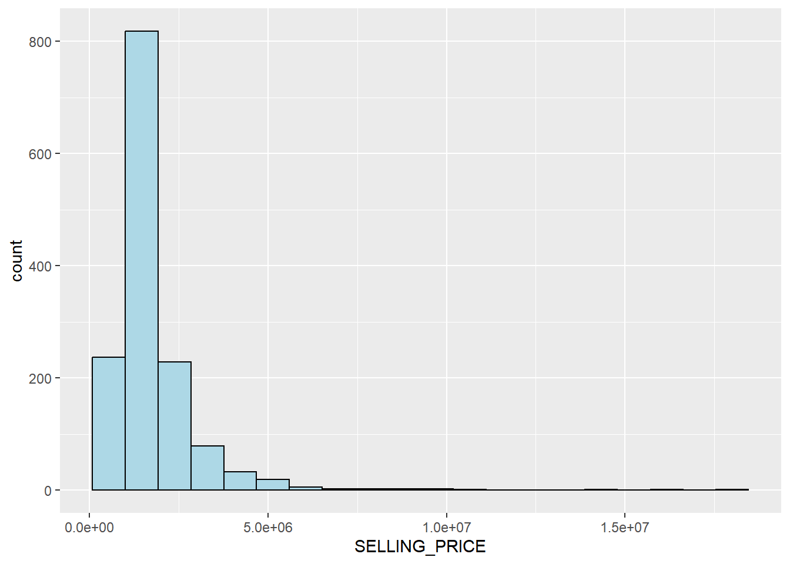
The histogram shows that the distribution of selling prices is right-skewed, meaning that most condominiums were sold at relatively lower price ranges.
A skewed distribution can be normalised using a log transformation.
The code chunk below creates a new variable called LOG_SELLING_PRICE by applying a log transformation to the variable SELLING_PRICE. This transformation is performed using the mutate() from the dplyr package and log() from base R.
condo_resale.sf <- condo_resale.sf %>%
mutate(`LOG_SELLING_PRICE` = log(SELLING_PRICE))The code chunk plots the LOG_SELLING_PRICE.
ggplot(data = condo_resale.sf, aes (x = `LOG_SELLING_PRICE`)) +
geom_histogram(bins = 20, color = "black", fill = "light blue")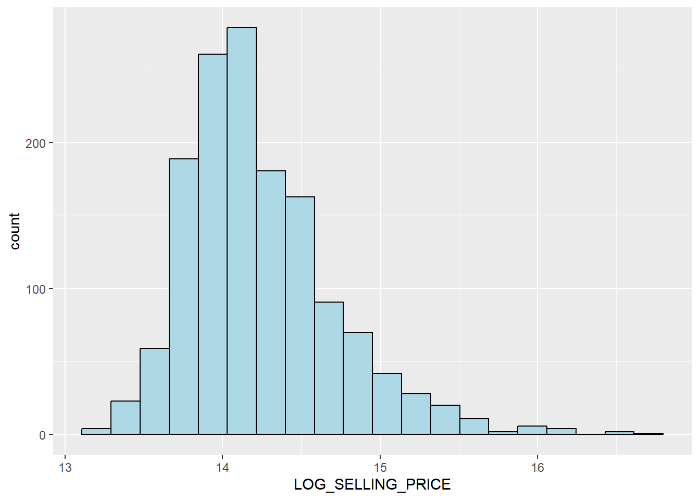
The distribution becomes less skewed after the transformation.
7.2 Multiple Histogram Plots Distribution of Variables
In this section, we create function to draw trellis plots (multiple histograms) for independent variables and arrange them into a grid of 4 rows and 3 columns by using ggarrange() from ggpubr package.
# <- ggplot(data = condo_resale.sf, aes(x = AREA_SQM)) +
#geom_histogram(bins = 20,
#color = "black",
#fill = "light blue")
#ggarrange(AREA_SQM, ncol = 3, nrow = 4)$`1`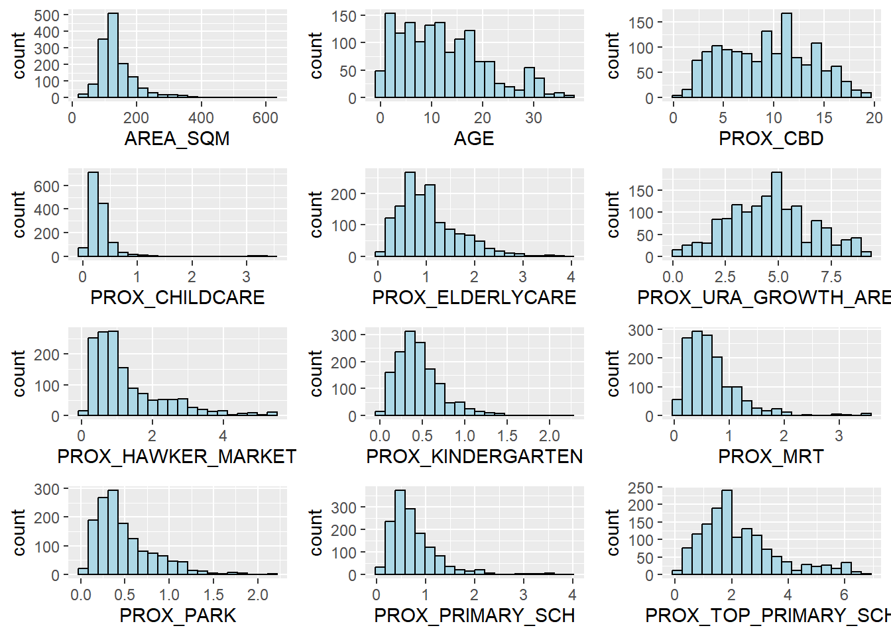
$`2`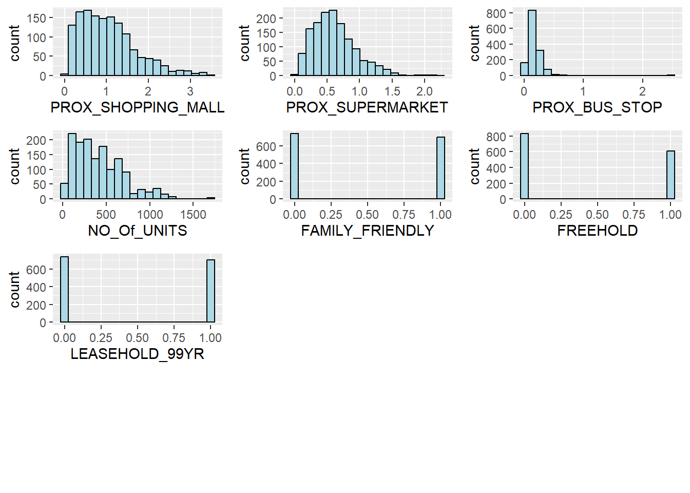
attr(,"class")
[1] "list" "ggarrange"7.3 Drawing Statistical Point Map Using Functions from tmap Package
The code chunk below displays the geospatial distribution of condominium resale prices in Singapore in an interactive point symbol map.
tmap_mode("plot")tm_shape(mpsz_svy21) + #base multipolygons
tm_polygons() +
tm_shape(condo_resale.sf) + #event points
tm_dots(fill = "SELLING_PRICE",
fill_alpha = 0.6,
size = 0.5,
fill.scale = tm_scale_intervals(
style = "quantile" )) +
tm_view(set_zoom_limits = c(11,14)) #focused view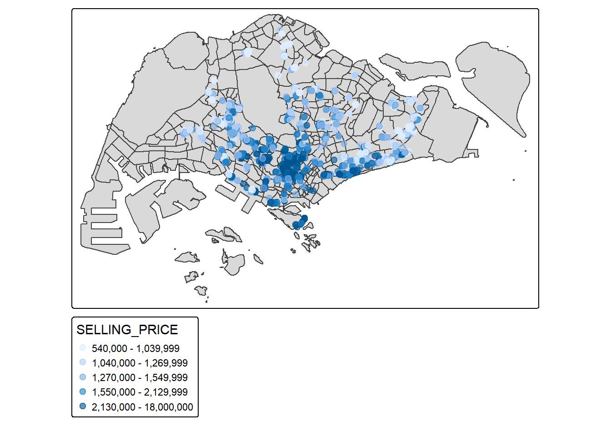
tmap_mode("plot")tm_dots() is used instead of tm_bubbles().
set_zoom_limits argument of tm_view() sets the minimum and maximum zoom level to 11 and 14 respectively.
Before moving to next section, we reset the plot mode to static.
8 Hedonic Pricing Modelling Using Functions from Base R
Next we build the hedonic pricing models for condominium reale units using lm() of base R.
Note
- syntax:
lm(formula, data, subset, weights, na.action, method = “qr”, model = TRUE, x = FALSE, y = FALSE, qr = TRUE, singular.ok = TRUE, contrasts = NULL, offset, …)
8.1 Simple Linear Regression Method
First, the code chunk below build a simple linear regression model that predicts SELLING_PRICE based on AREA_SQM.The tilde (~) is read as “is modelled by” or “as a function of.”
condo.slr <-lm(formula = SELLING_PRICE ~ AREA_SQM, data = condo_resale.sf)The code chunk blow prints the model call from R’s lm() linear model function and model’s coefficients.
condo.slr
Call:
lm(formula = SELLING_PRICE ~ AREA_SQM, data = condo_resale.sf)
Coefficients:
(Intercept) AREA_SQM
-258121 14719 The code chunk below returns the summary report of the simple regression model.
- Residuals rules:
| Residuals Statistic | Interpretation |
|---|---|
| Median approx 0 | unbiased model overall |
| Negative median | Overestimate on average |
| Positive median | Underestimate on average |
Since the median is negative -87K, the model slightly overestimates the selling prices.
- Coefficients:
The linear relationship can be described as:
SELLING_PRICE = -258121.1 + 14719.0 x AREA_SQM
That means every one sqm increases in area will result in $14,719 increases in selling price on average. Since selling price is not below zero in real life, the intercept has no practical meaning. Since p-values of coefficients are much smaller than 0.001,we reject the null hypothesis that both coefficient are statistically significant.
- Model fit Statistics
Residual standard error of 942,700 means that the predictions are about $942,700 away from the actual prices on average. The R-squared 0.4518 means the simple linear model can explain 45% of variance in resale prices. The p-value of F-statistics (< 0.001) confirms that the simple model is statistically significant.
summary(condo.slr)
Call:
lm(formula = SELLING_PRICE ~ AREA_SQM, data = condo_resale.sf)
Residuals:
Min 1Q Median 3Q Max
-3695815 -391764 -87517 258900 13503875
Coefficients:
Estimate Std. Error t value Pr(>|t|)
(Intercept) -258121.1 63517.2 -4.064 5.09e-05 ***
AREA_SQM 14719.0 428.1 34.381 < 2e-16 ***
---
Signif. codes: 0 '***' 0.001 '**' 0.01 '*' 0.05 '.' 0.1 ' ' 1
Residual standard error: 942700 on 1434 degrees of freedom
Multiple R-squared: 0.4518, Adjusted R-squared: 0.4515
F-statistic: 1182 on 1 and 1434 DF, p-value: < 2.2e-16The code chunk below reveals the internal structure of the regression model, displaying a compact list of its components, class, and dimensions.
str(condo.slr)List of 12
$ coefficients : Named num [1:2] -258121 14719
..- attr(*, "names")= chr [1:2] "(Intercept)" "AREA_SQM"
$ residuals : Named num [1:1436] -1290059 -130397 -67198 2638804 -476138 ...
..- attr(*, "names")= chr [1:1436] "1" "2" "3" "4" ...
$ effects : Named num [1:1436] -66361417 -32409518 -29602 2671396 -442802 ...
..- attr(*, "names")= chr [1:1436] "(Intercept)" "AREA_SQM" "" "" ...
$ rank : int 2
$ fitted.values: Named num [1:1436] 4290059 4010397 3392198 1611196 1876138 ...
..- attr(*, "names")= chr [1:1436] "1" "2" "3" "4" ...
$ assign : int [1:2] 0 1
$ qr :List of 5
..$ qr : num [1:1436, 1:2] -37.8946 0.0264 0.0264 0.0264 0.0264 ...
.. ..- attr(*, "dimnames")=List of 2
.. .. ..$ : chr [1:1436] "1" "2" "3" "4" ...
.. .. ..$ : chr [1:2] "(Intercept)" "AREA_SQM"
.. ..- attr(*, "assign")= int [1:2] 0 1
..$ qraux: num [1:2] 1.03 1.07
..$ pivot: int [1:2] 1 2
..$ tol : num 1e-07
..$ rank : int 2
..- attr(*, "class")= chr "qr"
$ df.residual : int 1434
$ xlevels : Named list()
$ call : language lm(formula = SELLING_PRICE ~ AREA_SQM, data = condo_resale.sf)
$ terms :Classes 'terms', 'formula' language SELLING_PRICE ~ AREA_SQM
.. ..- attr(*, "variables")= language list(SELLING_PRICE, AREA_SQM)
.. ..- attr(*, "factors")= int [1:2, 1] 0 1
.. .. ..- attr(*, "dimnames")=List of 2
.. .. .. ..$ : chr [1:2] "SELLING_PRICE" "AREA_SQM"
.. .. .. ..$ : chr "AREA_SQM"
.. ..- attr(*, "term.labels")= chr "AREA_SQM"
.. ..- attr(*, "order")= int 1
.. ..- attr(*, "intercept")= int 1
.. ..- attr(*, "response")= int 1
.. ..- attr(*, ".Environment")=<environment: R_GlobalEnv>
.. ..- attr(*, "predvars")= language list(SELLING_PRICE, AREA_SQM)
.. ..- attr(*, "dataClasses")= Named chr [1:2] "numeric" "numeric"
.. .. ..- attr(*, "names")= chr [1:2] "SELLING_PRICE" "AREA_SQM"
$ model :'data.frame': 1436 obs. of 2 variables:
..$ SELLING_PRICE: num [1:1436] 3000000 3880000 3325000 4250000 1400000 ...
..$ AREA_SQM : num [1:1436] 309 290 248 127 145 139 218 141 165 168 ...
..- attr(*, "terms")=Classes 'terms', 'formula' language SELLING_PRICE ~ AREA_SQM
.. .. ..- attr(*, "variables")= language list(SELLING_PRICE, AREA_SQM)
.. .. ..- attr(*, "factors")= int [1:2, 1] 0 1
.. .. .. ..- attr(*, "dimnames")=List of 2
.. .. .. .. ..$ : chr [1:2] "SELLING_PRICE" "AREA_SQM"
.. .. .. .. ..$ : chr "AREA_SQM"
.. .. ..- attr(*, "term.labels")= chr "AREA_SQM"
.. .. ..- attr(*, "order")= int 1
.. .. ..- attr(*, "intercept")= int 1
.. .. ..- attr(*, "response")= int 1
.. .. ..- attr(*, ".Environment")=<environment: R_GlobalEnv>
.. .. ..- attr(*, "predvars")= language list(SELLING_PRICE, AREA_SQM)
.. .. ..- attr(*, "dataClasses")= Named chr [1:2] "numeric" "numeric"
.. .. .. ..- attr(*, "names")= chr [1:2] "SELLING_PRICE" "AREA_SQM"
- attr(*, "class")= chr "lm"class(condo.slr)[1] "lm"We can also use $ symbol to access important elements of the model (such as coefficients, effects, fitted.values and residuals) from the list output revealed by the str() structure function.
condo.slr$coefficients(Intercept) AREA_SQM
-258121.06 14719.03 condo.slr$effectsThe code chunk below visualises the simple linear model using functions from ggplot2. geom_smooth(method = lm) adds a linear regression line to the plot.
ggplot(data = condo_resale.sf,
aes (x=`AREA_SQM`, y = `SELLING_PRICE`)) +
geom_point()+ # shows the scatter plot of area_sqm and selling price
geom_smooth(method = lm)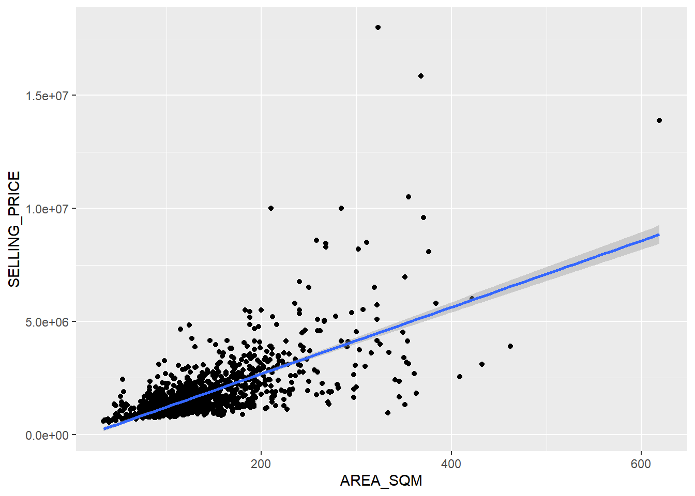
We observe a few outliers with relatively high selling prices.
8.2 Multiple Linear Regression Method Using Functions from corrplot and Base R
8.2.1 Visualising the relationships of the independent variables
Before building the multiple linear regression model, we need to check for multicollinearity that independent variables are not highly correlated with each other. Otherwise, there will be redundancy in the model, which can distort the estimated effects of the predictors.
The code chunk below plot the correlation matrix of the independent variables. The corrplot package is used because the pairs() from base R output can be cramped and difficult to interpret when there are many variables. The data set used is not the converted sf object but our regular data frame because most statistical plotting functions cannot handle spatial geometry columns. AOE order is used, as recommended by Michael Friendly.
corrplot(cor(condo_resale[, 5:23]),
diag = FALSE, # hide diagonal or TRUE
order = "AOE", # angular order of the eigenvectors" /original/AOE/FPC/hclust/alphabet
tl.pos = "td", # text label position: top and diagonal/lt/n null
tl.cex = 0.5, # text label size: shrinks 50%
method = "number", # display number/circle/color/shade/pie
type = "upper") #show only the upper triangle/full/lower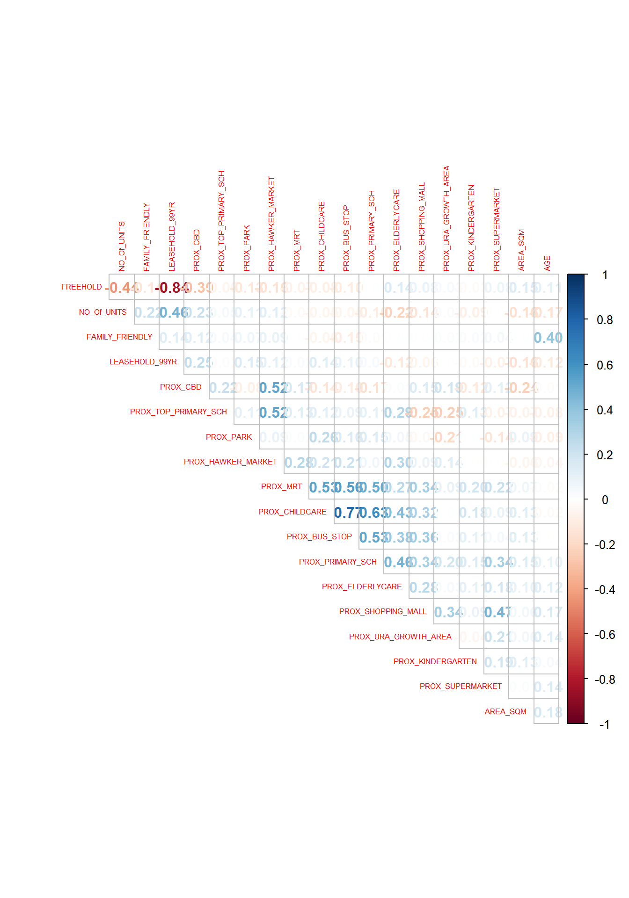
The output shows a triangular matrix of pairwise correlation values between variables.
| Correlation r value | Interpretation |
|---|---|
| (0,1) | positive relationships |
| =0 | no correlation |
| (-1,0) | negative relationships |
Variables with high correlation values (|r| > 0.8) may indicate potential multicollinearity. They are Freehold and LEASE_99YEAR. We select Freehold from one of the pair.
8.3 Building a hedonic pricing model Using lm() from Base R
condo.mlr <- lm(
formula = SELLING_PRICE ~ AREA_SQM + AGE +
PROX_CBD + PROX_CHILDCARE + PROX_ELDERLYCARE +
PROX_URA_GROWTH_AREA + PROX_HAWKER_MARKET +
PROX_KINDERGARTEN + PROX_MRT + PROX_PARK +
PROX_PRIMARY_SCH + PROX_TOP_PRIMARY_SCH +
PROX_SHOPPING_MALL + PROX_SUPERMARKET +
PROX_BUS_STOP + NO_Of_UNITS +
FAMILY_FRIENDLY + FREEHOLD,
data=condo_resale.sf)summary(condo.mlr)
Call:
lm(formula = SELLING_PRICE ~ AREA_SQM + AGE + PROX_CBD + PROX_CHILDCARE +
PROX_ELDERLYCARE + PROX_URA_GROWTH_AREA + PROX_HAWKER_MARKET +
PROX_KINDERGARTEN + PROX_MRT + PROX_PARK + PROX_PRIMARY_SCH +
PROX_TOP_PRIMARY_SCH + PROX_SHOPPING_MALL + PROX_SUPERMARKET +
PROX_BUS_STOP + NO_Of_UNITS + FAMILY_FRIENDLY + FREEHOLD,
data = condo_resale.sf)
Residuals:
Min 1Q Median 3Q Max
-3475964 -293923 -23069 241043 12260381
Coefficients:
Estimate Std. Error t value Pr(>|t|)
(Intercept) 481728.40 121441.01 3.967 7.65e-05 ***
AREA_SQM 12708.32 369.59 34.385 < 2e-16 ***
AGE -24440.82 2763.16 -8.845 < 2e-16 ***
PROX_CBD -78669.78 6768.97 -11.622 < 2e-16 ***
PROX_CHILDCARE -351617.91 109467.25 -3.212 0.00135 **
PROX_ELDERLYCARE 171029.42 42110.51 4.061 5.14e-05 ***
PROX_URA_GROWTH_AREA 38474.53 12523.57 3.072 0.00217 **
PROX_HAWKER_MARKET 23746.10 29299.76 0.810 0.41782
PROX_KINDERGARTEN 147468.99 82668.87 1.784 0.07466 .
PROX_MRT -314599.68 57947.44 -5.429 6.66e-08 ***
PROX_PARK 563280.50 66551.68 8.464 < 2e-16 ***
PROX_PRIMARY_SCH 180186.08 65237.95 2.762 0.00582 **
PROX_TOP_PRIMARY_SCH 2280.04 20410.43 0.112 0.91107
PROX_SHOPPING_MALL -206604.06 42840.60 -4.823 1.57e-06 ***
PROX_SUPERMARKET -44991.80 77082.64 -0.584 0.55953
PROX_BUS_STOP 683121.35 138353.28 4.938 8.85e-07 ***
NO_Of_UNITS -231.18 89.03 -2.597 0.00951 **
FAMILY_FRIENDLY 140340.77 47020.55 2.985 0.00289 **
FREEHOLD 359913.01 49220.22 7.312 4.38e-13 ***
---
Signif. codes: 0 '***' 0.001 '**' 0.01 '*' 0.05 '.' 0.1 ' ' 1
Residual standard error: 755800 on 1417 degrees of freedom
Multiple R-squared: 0.6518, Adjusted R-squared: 0.6474
F-statistic: 147.4 on 18 and 1417 DF, p-value: < 2.2e-16The code chunk above returns the summary report of the multiple linear regression model.
- Residuals:
Since the median is negative -23K, the model slightly overestimates the selling prices but improved from the simple model.
- Coefficients:
If the significance level alpha is set at 0.05, variables with p-values higher than 0.05 should be dropped from the model, as they are not statistically significant.Variables to drop are PROX_HAWKER_MARKET, PROX_KINDERGARTEN, PROX_TOP_PRIMARY_SCH and PROX_SUPERMARKET.
The predictors with p-values less than 0.05 are retained, since they show strong evidence of a relationship with the resale prices.
The linear relationship can be described as:
e.g. that every one sqm increases in area will result in $12,708.32 increases in selling price on average.
The intercept 481,728 represents the baseline selling price when all variables are zero.
- Model fit Statistics
Residual standard error of 755,800 means that the predictions are about $755,800 away from the actual prices on average.
The p-value of F-statistics (< 0.001) confirms that the new model is statistically significant.
The R-squared value of 0.6518 indicates that the multiple linear regression model explains approximately 65% of the variance in condominium resale prices. Compared to the simple linear model (R2 = 0.45; adjusted R2 = 0.45), the multiple regression model (adjusted R2 = 0.6474) provides a more sophisticated and accurate representation of the factors influencing resale prices.
8.4 Revising the Model
The code chunk below builds a new multiple regression moedel with the variables deemed as statistically significant.
Call:
lm(formula = SELLING_PRICE ~ AREA_SQM + AGE + PROX_CBD + PROX_CHILDCARE +
PROX_MRT + PROX_ELDERLYCARE + PROX_URA_GROWTH_AREA + PROX_PARK +
PROX_PRIMARY_SCH + PROX_SHOPPING_MALL + PROX_BUS_STOP + NO_Of_UNITS +
FAMILY_FRIENDLY + FREEHOLD, data = condo_resale.sf)
Residuals:
Min 1Q Median 3Q Max
-3470778 -298119 -23481 248917 12234210
Coefficients:
Estimate Std. Error t value Pr(>|t|)
(Intercept) 527633.22 108183.22 4.877 1.20e-06 ***
AREA_SQM 12777.52 367.48 34.771 < 2e-16 ***
AGE -24687.74 2754.84 -8.962 < 2e-16 ***
PROX_CBD -77131.32 5763.12 -13.384 < 2e-16 ***
PROX_CHILDCARE -318472.75 107959.51 -2.950 0.003231 **
PROX_MRT -294745.11 56916.37 -5.179 2.56e-07 ***
PROX_ELDERLYCARE 185575.62 39901.86 4.651 3.61e-06 ***
PROX_URA_GROWTH_AREA 39163.25 11754.83 3.332 0.000885 ***
PROX_PARK 570504.81 65507.03 8.709 < 2e-16 ***
PROX_PRIMARY_SCH 159856.14 60234.60 2.654 0.008046 **
PROX_SHOPPING_MALL -220947.25 36561.83 -6.043 1.93e-09 ***
PROX_BUS_STOP 682482.22 134513.24 5.074 4.42e-07 ***
NO_Of_UNITS -245.48 87.95 -2.791 0.005321 **
FAMILY_FRIENDLY 146307.58 46893.02 3.120 0.001845 **
FREEHOLD 350599.81 48506.48 7.228 7.98e-13 ***
---
Signif. codes: 0 '***' 0.001 '**' 0.01 '*' 0.05 '.' 0.1 ' ' 1
Residual standard error: 756000 on 1421 degrees of freedom
Multiple R-squared: 0.6507, Adjusted R-squared: 0.6472
F-statistic: 189.1 on 14 and 1421 DF, p-value: < 2.2e-16The report suggests all explanatory variables are statistically significant at 95% confident level.
8.5 Preparing Publication Quality Table: gtsummary Method
The code chunk below uses tbl_regression() from gtsummary package to create an elegant and well formatted regression summary table.
More statistical results can be included in the table via add_glance_table() or add_glance_source_note().
Refer to the tutorial for more details.
| Characteristic | Beta | 95% CI | p-value |
|---|---|---|---|
| (Intercept) | 527,633 | 315,417, 739,849 | <0.001 |
| AREA_SQM | 12,778 | 12,057, 13,498 | <0.001 |
| AGE | -24,688 | -30,092, -19,284 | <0.001 |
| PROX_CBD | -77,131 | -88,436, -65,826 | <0.001 |
| PROX_CHILDCARE | -318,473 | -530,250, -106,696 | 0.003 |
| PROX_MRT | -294,745 | -406,394, -183,096 | <0.001 |
| PROX_ELDERLYCARE | 185,576 | 107,303, 263,849 | <0.001 |
| PROX_URA_GROWTH_AREA | 39,163 | 16,105, 62,222 | <0.001 |
| PROX_PARK | 570,505 | 442,004, 699,006 | <0.001 |
| PROX_PRIMARY_SCH | 159,856 | 41,698, 278,014 | 0.008 |
| PROX_SHOPPING_MALL | -220,947 | -292,668, -149,226 | <0.001 |
| PROX_BUS_STOP | 682,482 | 418,616, 946,348 | <0.001 |
| NO_Of_UNITS | -245 | -418, -73 | 0.005 |
| FAMILY_FRIENDLY | 146,308 | 54,321, 238,295 | 0.002 |
| FREEHOLD | 350,600 | 255,448, 445,752 | <0.001 |
| Abbreviation: CI = Confidence Interval | |||
| R² = 0.651; Adjusted R² = 0.647; AIC = 42,967; Statistic = 189; p-value = <0.001; σ = 755,957 | |||
R2s have been explained earlier.
AIC stands for Akaike Information Criterion which measures model quality by goodness of fit and complexity. The lower value means better model given same data.
Statistic is F-statistic and its p-value. Sigma is Residual Standard Error.
All these metrics are reported in the model summary output via summary().
8.6 Regression Diagnostics
Regression model’s assumptions are:
- Linearity: Predictors have linear relation to target
- Independence: Errors are independent
- Homoscedasticity: Constant variance of residuals, Residual plot
- Normality: Errors are normally distributed, QQ plot
- No Multicollinearity: Predictors not highly correlated
In this section, we use olsrr package to perform the OLS regression diagnostics.
The olsrr package provides following tools for building OLS regression models using R:
- Comprehensive Regression Output
- Variable Selection Procedures
- Heteroskedasticity Tests
- Collinearity Diagnostics
- Model Fit Assessment
- Measures of Influence
- Residual Diagnostics
- Variable Contribution Assessment
Multicollinearity occurs when independent variables are highly correlated. High multicollinearity inflates the variance of coefficient estimates, leading to unstable and unreliable results, and may cause truly important predictors to appear statistically insignificant.
The code chunk below use check_collinearity() from performance package to test the Multicollinearity.
check_collinearity(condo.mlr1)# Check for Multicollinearity
Low Correlation
Term VIF VIF 95% CI adj. VIF Tolerance Tolerance 95% CI
AREA_SQM 1.15 [1.09, 1.23] 1.07 0.87 [0.81, 0.92]
AGE 1.41 [1.33, 1.52] 1.19 0.71 [0.66, 0.75]
PROX_CBD 1.57 [1.47, 1.69] 1.25 0.64 [0.59, 0.68]
PROX_CHILDCARE 3.26 [3.00, 3.56] 1.81 0.31 [0.28, 0.33]
PROX_MRT 1.91 [1.78, 2.07] 1.38 0.52 [0.48, 0.56]
PROX_ELDERLYCARE 1.52 [1.42, 1.63] 1.23 0.66 [0.61, 0.70]
PROX_URA_GROWTH_AREA 1.33 [1.26, 1.43] 1.15 0.75 [0.70, 0.80]
PROX_PARK 1.21 [1.15, 1.29] 1.10 0.83 [0.77, 0.87]
PROX_PRIMARY_SCH 2.21 [2.05, 2.40] 1.49 0.45 [0.42, 0.49]
PROX_SHOPPING_MALL 1.48 [1.39, 1.60] 1.22 0.67 [0.63, 0.72]
PROX_BUS_STOP 2.85 [2.62, 3.10] 1.69 0.35 [0.32, 0.38]
NO_Of_UNITS 1.45 [1.36, 1.56] 1.20 0.69 [0.64, 0.73]
FAMILY_FRIENDLY 1.38 [1.30, 1.48] 1.17 0.72 [0.67, 0.77]
FREEHOLD 1.44 [1.36, 1.55] 1.20 0.69 [0.65, 0.74]summary(check_collinearity(condo.mlr1)) Term VIF VIF_CI_low VIF_CI_high
Length:14 Min. :1.146 Min. :1.093 Min. :1.229
Class :character 1st Qu.:1.389 1st Qu.:1.308 1st Qu.:1.491
Mode :character Median :1.467 Median :1.377 Median :1.576
Mean :1.727 Mean :1.612 Mean :1.865
3rd Qu.:1.826 3rd Qu.:1.701 3rd Qu.:1.973
Max. :3.262 Max. :2.996 Max. :3.562
SE_factor Tolerance Tolerance_CI_low Tolerance_CI_high
Min. :1.070 Min. :0.3066 Min. :0.2807 Min. :0.3337
1st Qu.:1.178 1st Qu.:0.5516 1st Qu.:0.5106 1st Qu.:0.5918
Median :1.211 Median :0.6820 Median :0.6344 Median :0.7260
Mean :1.297 Mean :0.6336 Mean :0.5886 Mean :0.6744
3rd Qu.:1.350 3rd Qu.:0.7201 3rd Qu.:0.6707 3rd Qu.:0.7647
Max. :1.806 Max. :0.8729 Max. :0.8136 Max. :0.9152 mlr.vif <- check_collinearity(condo.mlr1)
plot(mlr.vif)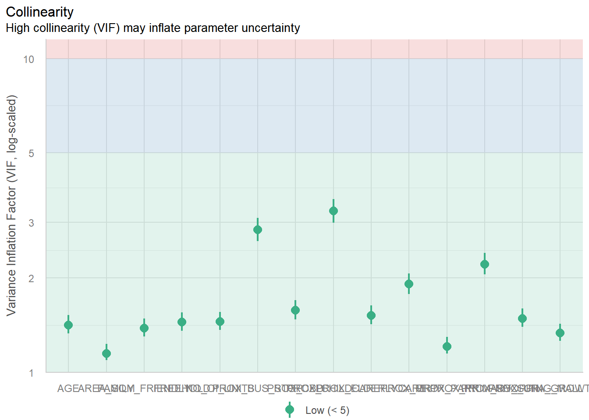
| VIF value | Interpretation |
|---|---|
| 1 | No correlation between predictors (ideal) |
| 1-5 | Moderate correlation; acceptable in most models. |
| >5 | Potential multicollinearity concern |
| >10 | Serious multicollinearity problems |
We can safely conclude that there are no sign of multicollinearity among the independent variables, since all VIF values are less than 10.
The code chunk below test linearity assumption by using ols_plot_resid_fit() from olsrr package.
ols_plot_resid_fit(condo.mlr1)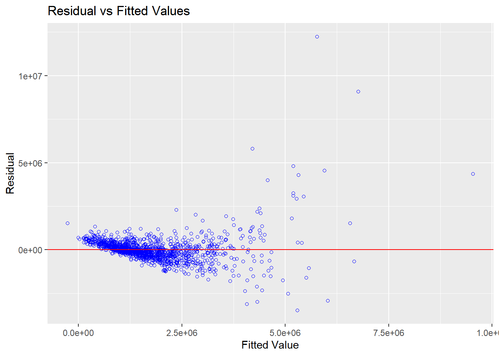
check_model(condo.mlr1, #performance pacakge
check = "linearity")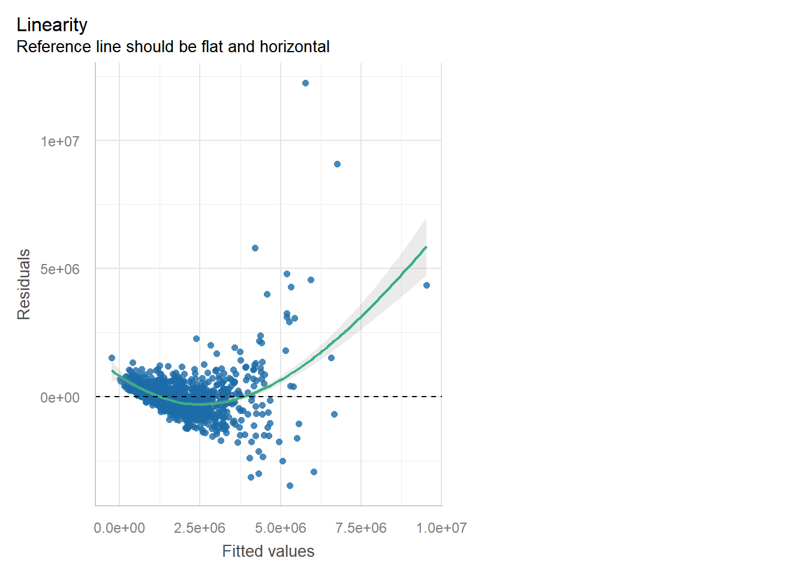
Note
According to the check_model() documentation, check argument could be one or more of “all”, “vif”, “qq”, “normality”, “linearity”, “ncv”, “homogeneity”, “outliers”, “reqq”, “pp_check”, “binned_residuals” or “overdispersion”.”reqq” is a QQ-plot for random effects and only available for mixed models. “ncv” is an alias for “linearity”, and checks for non-constant variance, i.e. for heteroscedasticity, as well as the linear relationship. By default, all possible checks are performed and plotted.
Since the majority of data points are scattered around the 0 line, relationships between the dependent variable and independent variables seem linear.
If the model’s residuals (the differences between observed and predicted values) are normally distributed, the normality assumption holds. This is crucial for accurate hypothesis testing and confidence intervals.
The code chunk below uses check_normality() of performance package to perform normality assumption test.
check_normality(condo.mlr1) # performance packageWarning: Non-normality of residuals detected (p < .001).plot(check_normality(condo.mlr1), type ="qq")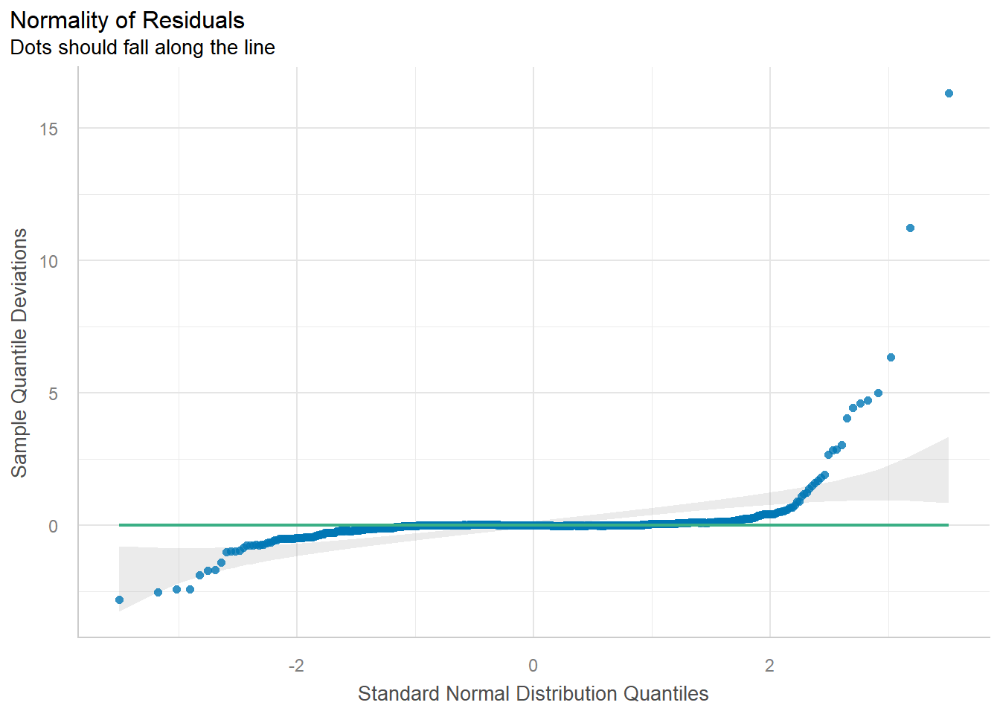
QQ plot above below shows that majority of the data points are felt along the zero line.
The code chunk below uses check_model() from performance package to test residuals normality.
check_model(condo.mlr1,
check= "normality")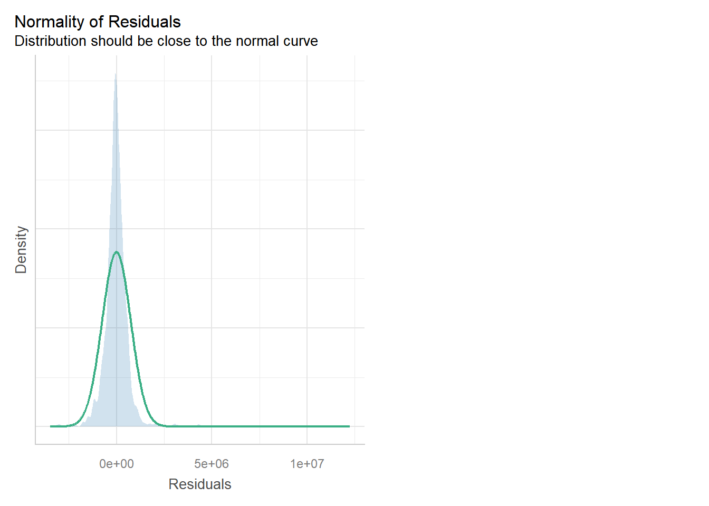
The figure reveals that the residual of the multiple linear regression model (i.e. condo.mlr1) is resemble normal distribution.
Alternatively, we could do the same tests using olsrr package, using following residual diagnostics: ols_plot_resid_box(), ols_plot_resid_hist(), ols_plot_resid_qq() and ols_test_normality() to check normality of residuals. ols_test_correlation()tests independence (autocorrelation).
ols_test_normality(condo.mlr1) #olsrr package-----------------------------------------------
Test Statistic pvalue
-----------------------------------------------
Shapiro-Wilk 0.6856 0.0000
Kolmogorov-Smirnov 0.1366 0.0000
Cramer-von Mises 121.0768 0.0000
Anderson-Darling 67.9551 0.0000
-----------------------------------------------ols_plot_resid_hist(condo.mlr1)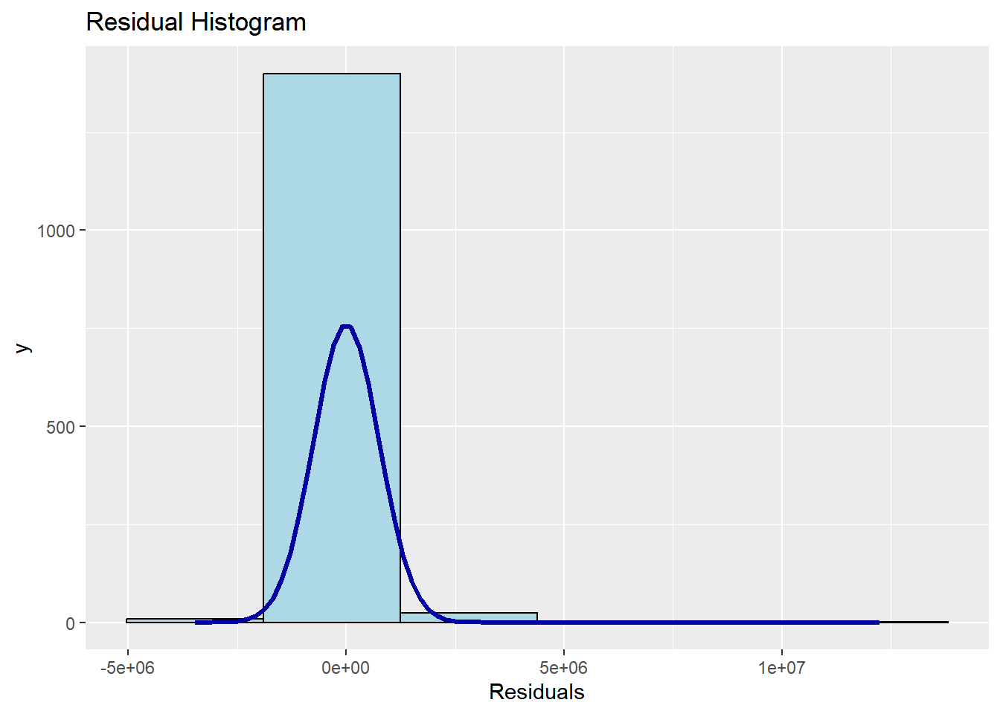
ols_plot_resid_qq(condo.mlr1) 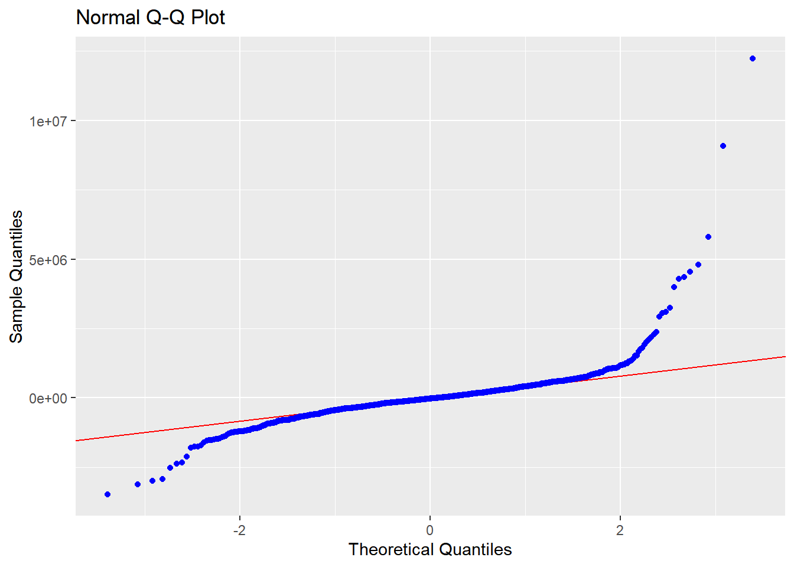
The hedonic model uses geographically referenced data, thus it is essential to check for spatial autocorrelation. Traditional OLS regression assumes independent observations, but spatial data often violates this assumption. Spatial autocorrelation occurs when nearby locations exhibit similar (positive) or dissimilar (negative) values, consistent with Tobler’s First Law of Geography. Ignoring it can lead to biased coefficients, incorrect p-values, and model misspecification. Therefore, testing the model’s residuals with Moran’s I is necessary—significant spatial autocorrelation indicates that the model fails to capture important spatial effects.
ols_test_correlation(condo.mlr1)[1] 0.8254074The OLS autocorrelation value of 0.825 suggests strong positive autocorrelation that the residuals are not independent. This violates the OLS assumption of error independence and should be further tested using Moran’s I for spatial dependence. Significant spatial autocorrelation in the residuals means the model is not capturing the full spatial story, some spatial dependence is left unexplained.
We first save the residuals as a data frame.
mlr.output <- as.data.frame(condo.mlr1$residuals)Next,we join the residuals with condo_resale.sf object.
condo_resale.sf <- cbind(condo_resale.sf, mlr.output) %>%
rename(`MLR_RES`= `condo.mlr1.residuals`)Next, we plot the distribution of residuals using functions from tmap package on an interactive map.
tmap_mode("plot")tm_shape(mpsz_svy21) +
tm_polygons(fill_alpha =0.4) +
tm_shape(condo_resale.sf) +
tm_dots( fill = "MLR_RES",
size = 0.7,
col = "black",
fill.scale = tm_scale(
n= 10,
value = rev(brewer.pal(11, "RdBu")),
style = "quantile",
midpoint = NA),
fill.legend = tm_legend(title = "Residuals")) +
tm_title("LM Residuals (Quantile Classification)") +
tm_layout(legdend.outside = TRUE) +
tm_view(set_zoom_limits = c(11,14))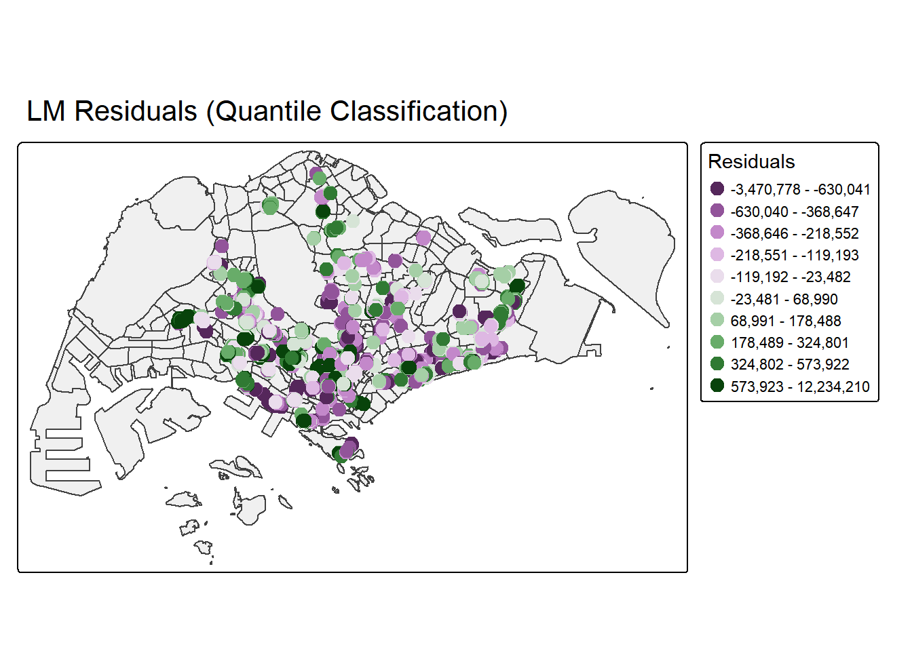
tmap_mode("plot")Each dot represents a condo resale residual (actual - predicted):
Green dots (positive): model underpredicted (actual > predicted).
Purple dots (negative): model overpredicted (actual < predicted).
If residuals were spatially random, green and purple dots would be evenly scattered across Singapore.But it is not the case here. Further, the coexistence of overestimates and underestimates within the same region indicates that the OLS model cannot fully capture local variations in housing market dynamics.
Next we can confirm with Moran’s I test on residuals.
First, we compute distance-based weight matrix using st_dist_band() function of sfdep.
condo_resale.sf <- condo_resale.sf %>%
mutate(nb = st_dist_band(st_geometry(geometry), upper = 1500),
wt = st_weights(nb, style = "W"),
.before = 1)Then, we use global_moran_perm() of sfdep package conduct Moran’s I test for residual spatial autocorrelation with Monte Carlo Simulations (500 times).
set.seed(1234)
global_moran_perm(condo_resale.sf$MLR_RES,
nb = condo_resale.sf$nb,
wt = condo_resale.sf$wt,
alternative = "two.sided",
nsim = 499)
Monte-Carlo simulation of Moran I
data: x
weights: listw
number of simulations + 1: 500
statistic = 0.14389, observed rank = 500, p-value < 2.2e-16
alternative hypothesis: two.sidedThe Global Moran’s I value of 0.1439 (p < 0.05) indicates a statistically significant positive spatial autocorrelation, suggesting a mild clustering pattern across the study area.
9 Building Hedonic Pricing Models Using GWmodel Package
In this section, we build hedonic pricing models using both the fixed and adaptive bandwidth schemes.
9.1 Computing Fixed Bandwidth
The bw.gwr() function from the GWModel package determines the optimal fixed bandwidth (**adaptive** = FALSE) and uses a stopping rule based on either the cross-validation (CV) or AICc (AIC) approach, as specified by the approach argument. Here, we use the AIC approach while the alternative method CV tends to produce a smaller bandwidth, which is more suitable for capturing local spatial variation.
bw.fixed <- bw.gwr(
formula = SELLING_PRICE ~ AREA_SQM + AGE +
PROX_CBD + PROX_CHILDCARE + PROX_ELDERLYCARE +
PROX_URA_GROWTH_AREA + PROX_MRT + PROX_PARK +
PROX_PRIMARY_SCH + PROX_SHOPPING_MALL +
PROX_BUS_STOP + NO_Of_UNITS + FAMILY_FRIENDLY +
FREEHOLD,
data=condo_resale.sf,
approach = "AIC",
kernel = "gaussian",
adaptive = FALSE,
longlat = FALSE)Fixed bandwidth: 17660.96 AICc value: 42937.77
Fixed bandwidth: 10917.26 AICc value: 42886.26
Fixed bandwidth: 6749.419 AICc value: 42757.54
Fixed bandwidth: 4173.553 AICc value: 42565.01
Fixed bandwidth: 2581.58 AICc value: 42368.05
Fixed bandwidth: 1597.687 AICc value: 42256.42
Fixed bandwidth: 989.6077 AICc value: 42262.3
Fixed bandwidth: 1973.501 AICc value: 42279.95
Fixed bandwidth: 1365.421 AICc value: 42254.72
Fixed bandwidth: 1221.873 AICc value: 42255.41
Fixed bandwidth: 1454.139 AICc value: 42254.82
Fixed bandwidth: 1310.591 AICc value: 42254.84
Fixed bandwidth: 1399.309 AICc value: 42254.71
Fixed bandwidth: 1420.252 AICc value: 42254.73
Fixed bandwidth: 1386.365 AICc value: 42254.7
Fixed bandwidth: 1378.365 AICc value: 42254.71
Fixed bandwidth: 1391.309 AICc value: 42254.7 AIC Recommended bandwidth is 1,391.309 metres, since we are using projected crs measured in metres. CV Recommended bandwidth is 971.340 metres, since we are using projected crs measured in metres.
9.2 GWModel method - fixed bandwith
The code chunk below calibrates the GWR model using fixed bandwidth and Gaussian kernel.gwr.basic() is a function from the GWModel package that performs basic Geographically Weighted Regression (GWR).
gwr.fixed <- gwr.basic(
formula = SELLING_PRICE ~ AREA_SQM + AGE +
PROX_CBD + PROX_CHILDCARE + PROX_ELDERLYCARE +
PROX_URA_GROWTH_AREA + PROX_MRT + PROX_PARK +
PROX_PRIMARY_SCH + PROX_SHOPPING_MALL +
PROX_BUS_STOP + NO_Of_UNITS + FAMILY_FRIENDLY +
FREEHOLD,
data=condo_resale.sf,
bw=bw.fixed,
kernel = 'gaussian',
longlat = FALSE)The class of GWR model is “gwrm”. The report belew shows
gwr.fixed ***********************************************************************
* Package GWmodel *
***********************************************************************
Program starts at: 2025-10-27 09:18:35.029261
Call:
gwr.basic(formula = SELLING_PRICE ~ AREA_SQM + AGE + PROX_CBD +
PROX_CHILDCARE + PROX_ELDERLYCARE + PROX_URA_GROWTH_AREA +
PROX_MRT + PROX_PARK + PROX_PRIMARY_SCH + PROX_SHOPPING_MALL +
PROX_BUS_STOP + NO_Of_UNITS + FAMILY_FRIENDLY + FREEHOLD,
data = condo_resale.sf, bw = bw.fixed, kernel = "gaussian",
longlat = FALSE)
Dependent (y) variable: SELLING_PRICE
Independent variables: AREA_SQM AGE PROX_CBD PROX_CHILDCARE PROX_ELDERLYCARE PROX_URA_GROWTH_AREA PROX_MRT PROX_PARK PROX_PRIMARY_SCH PROX_SHOPPING_MALL PROX_BUS_STOP NO_Of_UNITS FAMILY_FRIENDLY FREEHOLD
Number of data points: 1436
***********************************************************************
* Results of Global Regression *
***********************************************************************
Call:
lm(formula = formula, data = data)
Residuals:
Min 1Q Median 3Q Max
-3470778 -298119 -23481 248917 12234210
Coefficients:
Estimate Std. Error t value Pr(>|t|)
(Intercept) 527633.22 108183.22 4.877 1.20e-06 ***
AREA_SQM 12777.52 367.48 34.771 < 2e-16 ***
AGE -24687.74 2754.84 -8.962 < 2e-16 ***
PROX_CBD -77131.32 5763.12 -13.384 < 2e-16 ***
PROX_CHILDCARE -318472.75 107959.51 -2.950 0.003231 **
PROX_ELDERLYCARE 185575.62 39901.86 4.651 3.61e-06 ***
PROX_URA_GROWTH_AREA 39163.25 11754.83 3.332 0.000885 ***
PROX_MRT -294745.11 56916.37 -5.179 2.56e-07 ***
PROX_PARK 570504.81 65507.03 8.709 < 2e-16 ***
PROX_PRIMARY_SCH 159856.14 60234.60 2.654 0.008046 **
PROX_SHOPPING_MALL -220947.25 36561.83 -6.043 1.93e-09 ***
PROX_BUS_STOP 682482.22 134513.24 5.074 4.42e-07 ***
NO_Of_UNITS -245.48 87.95 -2.791 0.005321 **
FAMILY_FRIENDLY 146307.58 46893.02 3.120 0.001845 **
FREEHOLD 350599.81 48506.48 7.228 7.98e-13 ***
---Significance stars
Signif. codes: 0 '***' 0.001 '**' 0.01 '*' 0.05 '.' 0.1 ' ' 1
Residual standard error: 756000 on 1421 degrees of freedom
Multiple R-squared: 0.6507
Adjusted R-squared: 0.6472
F-statistic: 189.1 on 14 and 1421 DF, p-value: < 2.2e-16
***Extra Diagnostic information
Residual sum of squares: 8.120609e+14
Sigma(hat): 752522.9
AIC: 42966.76
AICc: 42967.14
BIC: 41731.39
***********************************************************************
* Results of Geographically Weighted Regression *
***********************************************************************
*********************Model calibration information*********************
Kernel function: gaussian
Fixed bandwidth: 1386.365
Regression points: the same locations as observations are used.
Distance metric: Euclidean distance metric is used.
****************Summary of GWR coefficient estimates:******************
Min. 1st Qu. Median 3rd Qu.
Intercept -5.0947e+06 7.5228e+04 9.6933e+05 1.6560e+06
AREA_SQM 2.5558e+03 5.4041e+03 7.6995e+03 1.2569e+04
AGE -8.4563e+04 -2.1045e+04 -1.1083e+04 -5.3192e+03
PROX_CBD -3.0121e+06 -2.2299e+05 -1.0207e+05 -5.3900e+04
PROX_CHILDCARE -3.6679e+06 -1.7018e+05 -1.6108e+04 2.4420e+05
PROX_ELDERLYCARE -4.9526e+05 -4.0047e+04 7.6715e+04 1.9650e+05
PROX_URA_GROWTH_AREA -3.0350e+05 -3.0201e+04 5.1598e+04 1.5573e+05
PROX_MRT -2.6892e+06 -3.9441e+05 -2.3485e+05 -1.3171e+05
PROX_PARK -9.1626e+05 -1.2375e+05 4.7999e+04 4.0312e+05
PROX_PRIMARY_SCH -4.7607e+05 -1.2189e+05 2.9963e+04 3.0890e+05
PROX_SHOPPING_MALL -9.7562e+05 -1.2594e+05 -1.2552e+04 1.0019e+05
PROX_BUS_STOP -8.4504e+05 8.8484e+04 3.7699e+05 1.4980e+06
NO_Of_UNITS -1.2111e+03 -3.4940e+02 -5.8441e+01 1.0022e+02
FAMILY_FRIENDLY -1.3608e+06 -5.1541e+04 1.0951e+04 1.5911e+05
FREEHOLD -1.1559e+05 9.5013e+04 2.0430e+05 3.5295e+05
Max.
Intercept 4639265.4
AREA_SQM 19642.4
AGE 41275.9
PROX_CBD 272116.0
PROX_CHILDCARE 1776212.0
PROX_ELDERLYCARE 2742988.5
PROX_URA_GROWTH_AREA 3038754.5
PROX_MRT 1349867.9
PROX_PARK 1102849.3
PROX_PRIMARY_SCH 2148894.9
PROX_SHOPPING_MALL 668261.7
PROX_BUS_STOP 4267600.2
NO_Of_UNITS 2174.3
FAMILY_FRIENDLY 1289044.9
FREEHOLD 1001304.5
************************Diagnostic information*************************
Number of data points: 1436
Effective number of parameters (2trace(S) - trace(S'S)): 302.5667
Effective degrees of freedom (n-2trace(S) + trace(S'S)): 1133.433
AICc (GWR book, Fotheringham, et al. 2002, p. 61, eq 2.33): 42254.7
AIC (GWR book, Fotheringham, et al. 2002,GWR p. 96, eq. 4.22): 41902.94
BIC (GWR book, Fotheringham, et al. 2002,GWR p. 61, eq. 2.34): 42011.36
Residual sum of squares: 3.334499e+14
R-square value: 0.8565589
Adjusted R-square value: 0.8182339
***********************************************************************
Program stops at: 2025-10-27 09:18:35.718192 AIC method:
The GWR model achieved an AICc value of 42,254.7, which is significantly lower than that of the global multiple linear regression model (42,967.10), which means a better fit and simplicity. The model also produced an R2 of 0.857 and an adjusted R2 of 0.818. The GWR explains over 80% of the spatial variation in condominium resale prices. However the wider bandwidth does not necessarily produce a higher R2. We should always try out both options and find a better performer.
CV method:
The GWR model achieved an AICc value of 42,263.61, which is significantly lower than that of the global multiple linear regression model (42,967.10), which means a better fit and simplicity. The model also produced an R2 of 0.891 and an adjusted R2 of 0.843. The GWR explains over 80% of the spatial variation in condominium resale prices.
9.3 Building Adaptive Bandwidth GWR Model
Next we calibrate the GWR-based hedonic pricing model by using adaptive bandwidth approach.
9.3.1 Computing the Adaptive Bandwidth
The code chunk below calculates the adaptive bandwidth by setting the adaptive argument to TRUE, allowing the bandwidth to vary according to the density of data points across the regions.
bw.adaptive <- bw.gwr(
formula = SELLING_PRICE ~ AREA_SQM + AGE +
PROX_CBD + PROX_CHILDCARE + PROX_ELDERLYCARE +
PROX_URA_GROWTH_AREA + PROX_MRT + PROX_PARK +
PROX_PRIMARY_SCH + PROX_SHOPPING_MALL +
PROX_BUS_STOP + NO_Of_UNITS + FAMILY_FRIENDLY +
FREEHOLD,
data=condo_resale.sf,
approach = "AIC",
kernel = "gaussian",
adaptive = TRUE,
longlat = FALSE)Adaptive bandwidth (number of nearest neighbours): 895 AICc value: 42879.45
Adaptive bandwidth (number of nearest neighbours): 561 AICc value: 42823.52
Adaptive bandwidth (number of nearest neighbours): 354 AICc value: 42677.14
Adaptive bandwidth (number of nearest neighbours): 226 AICc value: 42484.37
Adaptive bandwidth (number of nearest neighbours): 147 AICc value: 42353.27
Adaptive bandwidth (number of nearest neighbours): 98 AICc value: 42280.68
Adaptive bandwidth (number of nearest neighbours): 68 AICc value: 42201.18
Adaptive bandwidth (number of nearest neighbours): 49 AICc value: 42100.66
Adaptive bandwidth (number of nearest neighbours): 37 AICc value: 42055.68
Adaptive bandwidth (number of nearest neighbours): 30 AICc value: 41982.22
Adaptive bandwidth (number of nearest neighbours): 25 AICc value: 42003.33
Adaptive bandwidth (number of nearest neighbours): 32 AICc value: 42035.41
Adaptive bandwidth (number of nearest neighbours): 27 AICc value: 41978.63
Adaptive bandwidth (number of nearest neighbours): 27 AICc value: 41978.63 The output values are not in metres as the bandwidth is the number of nearest neighbours, not a physical distance. AIC method recommends the optimal adaptive bandwidth of 27 means each local regression is calibrated using the 27 nearest neighbouring observations, while CV recommends the optimal adaptive bandwidth of 30.
9.4 Constructing the Adaptive Bandwidth GWR Model
Similarly, we build the GWR model using adpative bandwidth and Gaussian Kernel.
gwr.adaptive <- gwr.basic(
formula = SELLING_PRICE ~ AREA_SQM + AGE +
PROX_CBD + PROX_CHILDCARE + PROX_ELDERLYCARE +
PROX_URA_GROWTH_AREA + PROX_MRT + PROX_PARK +
PROX_PRIMARY_SCH + PROX_SHOPPING_MALL + PROX_BUS_STOP +
NO_Of_UNITS + FAMILY_FRIENDLY + FREEHOLD,
data=condo_resale.sf,
bw=bw.adaptive,
kernel = 'gaussian',
adaptive=TRUE,
longlat = FALSE)gwr.adaptive ***********************************************************************
* Package GWmodel *
***********************************************************************
Program starts at: 2025-10-27 09:18:44.926513
Call:
gwr.basic(formula = SELLING_PRICE ~ AREA_SQM + AGE + PROX_CBD +
PROX_CHILDCARE + PROX_ELDERLYCARE + PROX_URA_GROWTH_AREA +
PROX_MRT + PROX_PARK + PROX_PRIMARY_SCH + PROX_SHOPPING_MALL +
PROX_BUS_STOP + NO_Of_UNITS + FAMILY_FRIENDLY + FREEHOLD,
data = condo_resale.sf, bw = bw.adaptive, kernel = "gaussian",
adaptive = TRUE, longlat = FALSE)
Dependent (y) variable: SELLING_PRICE
Independent variables: AREA_SQM AGE PROX_CBD PROX_CHILDCARE PROX_ELDERLYCARE PROX_URA_GROWTH_AREA PROX_MRT PROX_PARK PROX_PRIMARY_SCH PROX_SHOPPING_MALL PROX_BUS_STOP NO_Of_UNITS FAMILY_FRIENDLY FREEHOLD
Number of data points: 1436
***********************************************************************
* Results of Global Regression *
***********************************************************************
Call:
lm(formula = formula, data = data)
Residuals:
Min 1Q Median 3Q Max
-3470778 -298119 -23481 248917 12234210
Coefficients:
Estimate Std. Error t value Pr(>|t|)
(Intercept) 527633.22 108183.22 4.877 1.20e-06 ***
AREA_SQM 12777.52 367.48 34.771 < 2e-16 ***
AGE -24687.74 2754.84 -8.962 < 2e-16 ***
PROX_CBD -77131.32 5763.12 -13.384 < 2e-16 ***
PROX_CHILDCARE -318472.75 107959.51 -2.950 0.003231 **
PROX_ELDERLYCARE 185575.62 39901.86 4.651 3.61e-06 ***
PROX_URA_GROWTH_AREA 39163.25 11754.83 3.332 0.000885 ***
PROX_MRT -294745.11 56916.37 -5.179 2.56e-07 ***
PROX_PARK 570504.81 65507.03 8.709 < 2e-16 ***
PROX_PRIMARY_SCH 159856.14 60234.60 2.654 0.008046 **
PROX_SHOPPING_MALL -220947.25 36561.83 -6.043 1.93e-09 ***
PROX_BUS_STOP 682482.22 134513.24 5.074 4.42e-07 ***
NO_Of_UNITS -245.48 87.95 -2.791 0.005321 **
FAMILY_FRIENDLY 146307.58 46893.02 3.120 0.001845 **
FREEHOLD 350599.81 48506.48 7.228 7.98e-13 ***
---Significance stars
Signif. codes: 0 '***' 0.001 '**' 0.01 '*' 0.05 '.' 0.1 ' ' 1
Residual standard error: 756000 on 1421 degrees of freedom
Multiple R-squared: 0.6507
Adjusted R-squared: 0.6472
F-statistic: 189.1 on 14 and 1421 DF, p-value: < 2.2e-16
***Extra Diagnostic information
Residual sum of squares: 8.120609e+14
Sigma(hat): 752522.9
AIC: 42966.76
AICc: 42967.14
BIC: 41731.39
***********************************************************************
* Results of Geographically Weighted Regression *
***********************************************************************
*********************Model calibration information*********************
Kernel function: gaussian
Adaptive bandwidth: 27 (number of nearest neighbours)
Regression points: the same locations as observations are used.
Distance metric: Euclidean distance metric is used.
****************Summary of GWR coefficient estimates:******************
Min. 1st Qu. Median 3rd Qu.
Intercept -3.4055e+08 -4.9698e+05 7.6667e+05 1.6291e+06
AREA_SQM 3.2900e+03 5.5381e+03 7.6847e+03 1.2674e+04
AGE -1.0016e+05 -2.7556e+04 -1.3592e+04 -4.6598e+03
PROX_CBD -4.0881e+06 -1.9515e+05 -7.3518e+04 2.9526e+04
PROX_CHILDCARE -1.7059e+06 -2.6967e+05 -1.2514e+04 3.4777e+05
PROX_ELDERLYCARE -2.2412e+06 -9.4985e+04 7.9372e+04 3.2765e+05
PROX_URA_GROWTH_AREA -1.8375e+07 -2.3765e+04 5.7504e+04 2.9631e+05
PROX_MRT -4.5351e+07 -6.2318e+05 -2.0888e+05 -3.8964e+04
PROX_PARK -1.0166e+08 -2.0084e+05 1.1152e+05 4.4450e+05
PROX_PRIMARY_SCH -4.6505e+06 -1.9579e+05 -9.1754e+03 4.3824e+05
PROX_SHOPPING_MALL -2.4269e+06 -1.4053e+05 -1.3684e+04 1.5823e+05
PROX_BUS_STOP -2.1436e+06 -8.7705e+04 4.1820e+05 1.2784e+06
NO_Of_UNITS -3.2993e+03 -2.2606e+02 -2.1790e+01 1.4231e+02
FAMILY_FRIENDLY -4.0477e+06 -6.5054e+04 2.2989e+04 1.9452e+05
FREEHOLD -1.0164e+08 2.4578e+04 1.8212e+05 3.8182e+05
Max.
Intercept 55107367.9
AREA_SQM 23242.4
AGE 265480.4
PROX_CBD 26220365.8
PROX_CHILDCARE 3565627.3
PROX_ELDERLYCARE 93434431.6
PROX_URA_GROWTH_AREA 25096284.3
PROX_MRT 9223676.9
PROX_PARK 2754387.0
PROX_PRIMARY_SCH 4618809.5
PROX_SHOPPING_MALL 39514834.8
PROX_BUS_STOP 13319341.1
NO_Of_UNITS 9878.1
FAMILY_FRIENDLY 2315112.2
FREEHOLD 1876281.2
************************Diagnostic information*************************
Number of data points: 1436
Effective number of parameters (2trace(S) - trace(S'S)): 393.0807
Effective degrees of freedom (n-2trace(S) + trace(S'S)): 1042.919
AICc (GWR book, Fotheringham, et al. 2002, p. 61, eq 2.33): 41978.63
AIC (GWR book, Fotheringham, et al. 2002,GWR p. 96, eq. 4.22): 41453.88
BIC (GWR book, Fotheringham, et al. 2002,GWR p. 61, eq. 2.34): 42070.13
Residual sum of squares: 2.305296e+14
R-square value: 0.9008324
Adjusted R-square value: 0.8634199
***********************************************************************
Program stops at: 2025-10-27 09:18:45.827169 The report for AIC method indicates AICc of adaptive bandwidth GWR model is reduced from 42,254.7 to 41978.63. Also we see improved R-square 0.901 and Adjusted R-square is 0.863. This time Adaptive AIC method outperform the CV method.
The report for CV method indicatesAICc of adaptive bandwidth GWR model is reduced from 42263.61.to 41982.22. Also we see improved R-square 0.891 and Adjusted R-square is 0.856.
str(gwr.adaptive)List of 7
$ GW.arguments :List of 11
..$ formula :Class 'formula' language SELLING_PRICE ~ AREA_SQM + AGE + PROX_CBD + PROX_CHILDCARE + PROX_ELDERLYCARE + PROX_URA_GROWTH_AREA + PROX_| __truncated__ ...
.. .. ..- attr(*, ".Environment")=<environment: R_GlobalEnv>
..$ rp.given : logi FALSE
..$ hatmatrix: logi TRUE
..$ bw : num 27
..$ kernel : chr "gaussian"
..$ adaptive : logi TRUE
..$ p : num 2
..$ theta : num 0
..$ longlat : logi FALSE
..$ DM.given : logi FALSE
..$ F123.test: logi FALSE
$ GW.diagnostic:List of 8
..$ RSS.gw : num 2.31e+14
..$ AIC : num 41454
..$ AICc : num 41979
..$ enp : num 393
..$ edf : num 1043
..$ gw.R2 : num 0.901
..$ gwR2.adj: num 0.863
..$ BIC : num 42070
$ lm :List of 14
..$ coefficients : Named num [1:15] 527633 12778 -24688 -77131 -318473 ...
.. ..- attr(*, "names")= chr [1:15] "(Intercept)" "AREA_SQM" "AGE" "PROX_CBD" ...
..$ residuals : Named num [1:1436] -1489100 415495 194130 1088993 -114969 ...
.. ..- attr(*, "names")= chr [1:1436] "1" "2" "3" "4" ...
..$ effects : Named num [1:1436] -66361417 -32409518 6712129 -16329091 604473 ...
.. ..- attr(*, "names")= chr [1:1436] "(Intercept)" "AREA_SQM" "AGE" "PROX_CBD" ...
..$ rank : int 15
..$ fitted.values: Named num [1:1436] 4489100 3464505 3130870 3161007 1514969 ...
.. ..- attr(*, "names")= chr [1:1436] "1" "2" "3" "4" ...
..$ assign : int [1:15] 0 1 2 3 4 5 6 7 8 9 ...
..$ qr :List of 5
.. ..$ qr : num [1:1436, 1:15] -37.8946 0.0264 0.0264 0.0264 0.0264 ...
.. .. ..- attr(*, "dimnames")=List of 2
.. .. .. ..$ : chr [1:1436] "1" "2" "3" "4" ...
.. .. .. ..$ : chr [1:15] "(Intercept)" "AREA_SQM" "AGE" "PROX_CBD" ...
.. .. ..- attr(*, "assign")= int [1:15] 0 1 2 3 4 5 6 7 8 9 ...
.. ..$ qraux: num [1:15] 1.03 1.07 1.05 1.03 1.01 ...
.. ..$ pivot: int [1:15] 1 2 3 4 5 6 7 8 9 10 ...
.. ..$ tol : num 1e-07
.. ..$ rank : int 15
.. ..- attr(*, "class")= chr "qr"
..$ df.residual : int 1421
..$ xlevels : Named list()
..$ call : language lm(formula = formula, data = data)
..$ terms :Classes 'terms', 'formula' language SELLING_PRICE ~ AREA_SQM + AGE + PROX_CBD + PROX_CHILDCARE + PROX_ELDERLYCARE + PROX_URA_GROWTH_AREA + PROX_| __truncated__ ...
.. .. ..- attr(*, "variables")= language list(SELLING_PRICE, AREA_SQM, AGE, PROX_CBD, PROX_CHILDCARE, PROX_ELDERLYCARE, PROX_URA_GROWTH_AREA, PROX_MR| __truncated__ ...
.. .. ..- attr(*, "factors")= int [1:15, 1:14] 0 1 0 0 0 0 0 0 0 0 ...
.. .. .. ..- attr(*, "dimnames")=List of 2
.. .. .. .. ..$ : chr [1:15] "SELLING_PRICE" "AREA_SQM" "AGE" "PROX_CBD" ...
.. .. .. .. ..$ : chr [1:14] "AREA_SQM" "AGE" "PROX_CBD" "PROX_CHILDCARE" ...
.. .. ..- attr(*, "term.labels")= chr [1:14] "AREA_SQM" "AGE" "PROX_CBD" "PROX_CHILDCARE" ...
.. .. ..- attr(*, "order")= int [1:14] 1 1 1 1 1 1 1 1 1 1 ...
.. .. ..- attr(*, "intercept")= int 1
.. .. ..- attr(*, "response")= int 1
.. .. ..- attr(*, ".Environment")=<environment: R_GlobalEnv>
.. .. ..- attr(*, "predvars")= language list(SELLING_PRICE, AREA_SQM, AGE, PROX_CBD, PROX_CHILDCARE, PROX_ELDERLYCARE, PROX_URA_GROWTH_AREA, PROX_MR| __truncated__ ...
.. .. ..- attr(*, "dataClasses")= Named chr [1:15] "numeric" "numeric" "numeric" "numeric" ...
.. .. .. ..- attr(*, "names")= chr [1:15] "SELLING_PRICE" "AREA_SQM" "AGE" "PROX_CBD" ...
..$ model :'data.frame': 1436 obs. of 15 variables:
.. ..$ SELLING_PRICE : num [1:1436] 3000000 3880000 3325000 4250000 1400000 ...
.. ..$ AREA_SQM : num [1:1436] 309 290 248 127 145 139 218 141 165 168 ...
.. ..$ AGE : num [1:1436] 30 32 33 7 28 22 24 24 27 31 ...
.. ..$ PROX_CBD : num [1:1436] 7.94 6.61 6.9 4.04 11.78 ...
.. ..$ PROX_CHILDCARE : num [1:1436] 0.166 0.28 0.429 0.395 0.119 ...
.. ..$ PROX_ELDERLYCARE : num [1:1436] 2.52 1.933 0.502 1.991 1.121 ...
.. ..$ PROX_URA_GROWTH_AREA: num [1:1436] 6.62 7.51 6.46 4.91 6.41 ...
.. ..$ PROX_MRT : num [1:1436] 0.561 0.658 0.305 0.691 0.529 ...
.. ..$ PROX_PARK : num [1:1436] 1.171 0.199 0.278 0.983 0.116 ...
.. ..$ PROX_PRIMARY_SCH : num [1:1436] 1.634 0.975 1.472 1.455 0.709 ...
.. ..$ PROX_SHOPPING_MALL : num [1:1436] 2.21 2.937 1.226 0.353 1.308 ...
.. ..$ PROX_BUS_STOP : num [1:1436] 0.103 0.287 0.285 0.299 0.345 ...
.. ..$ NO_Of_UNITS : num [1:1436] 18 20 27 30 30 31 32 32 32 32 ...
.. ..$ FAMILY_FRIENDLY : num [1:1436] 0 0 0 0 0 1 1 0 1 1 ...
.. ..$ FREEHOLD : num [1:1436] 1 1 1 1 1 1 1 1 1 0 ...
.. ..- attr(*, "terms")=Classes 'terms', 'formula' language SELLING_PRICE ~ AREA_SQM + AGE + PROX_CBD + PROX_CHILDCARE + PROX_ELDERLYCARE + PROX_URA_GROWTH_AREA + PROX_| __truncated__ ...
.. .. .. ..- attr(*, "variables")= language list(SELLING_PRICE, AREA_SQM, AGE, PROX_CBD, PROX_CHILDCARE, PROX_ELDERLYCARE, PROX_URA_GROWTH_AREA, PROX_MR| __truncated__ ...
.. .. .. ..- attr(*, "factors")= int [1:15, 1:14] 0 1 0 0 0 0 0 0 0 0 ...
.. .. .. .. ..- attr(*, "dimnames")=List of 2
.. .. .. .. .. ..$ : chr [1:15] "SELLING_PRICE" "AREA_SQM" "AGE" "PROX_CBD" ...
.. .. .. .. .. ..$ : chr [1:14] "AREA_SQM" "AGE" "PROX_CBD" "PROX_CHILDCARE" ...
.. .. .. ..- attr(*, "term.labels")= chr [1:14] "AREA_SQM" "AGE" "PROX_CBD" "PROX_CHILDCARE" ...
.. .. .. ..- attr(*, "order")= int [1:14] 1 1 1 1 1 1 1 1 1 1 ...
.. .. .. ..- attr(*, "intercept")= int 1
.. .. .. ..- attr(*, "response")= int 1
.. .. .. ..- attr(*, ".Environment")=<environment: R_GlobalEnv>
.. .. .. ..- attr(*, "predvars")= language list(SELLING_PRICE, AREA_SQM, AGE, PROX_CBD, PROX_CHILDCARE, PROX_ELDERLYCARE, PROX_URA_GROWTH_AREA, PROX_MR| __truncated__ ...
.. .. .. ..- attr(*, "dataClasses")= Named chr [1:15] "numeric" "numeric" "numeric" "numeric" ...
.. .. .. .. ..- attr(*, "names")= chr [1:15] "SELLING_PRICE" "AREA_SQM" "AGE" "PROX_CBD" ...
..$ x : num [1:1436, 1:15] 1 1 1 1 1 1 1 1 1 1 ...
.. ..- attr(*, "dimnames")=List of 2
.. .. ..$ : chr [1:1436] "1" "2" "3" "4" ...
.. .. ..$ : chr [1:15] "Intercept" "AREA_SQM" "AGE" "PROX_CBD" ...
.. ..- attr(*, "assign")= int [1:15] 0 1 2 3 4 5 6 7 8 9 ...
..$ y : Named num [1:1436] 3000000 3880000 3325000 4250000 1400000 ...
.. ..- attr(*, "names")= chr [1:1436] "1" "2" "3" "4" ...
..- attr(*, "class")= chr "lm"
$ SDF :Classes 'sf' and 'data.frame': 1436 obs. of 52 variables:
..$ Intercept : num [1:1436] 2044700 1773153 3520072 1539855 2341689 ...
..$ AREA_SQM : num [1:1436] 9560 15390 13016 21340 6783 ...
..$ AGE : num [1:1436] -9500 -48975 -25897 -97109 -18166 ...
..$ PROX_CBD : num [1:1436] -120265 -173035 -266085 4535465 -343211 ...
..$ PROX_CHILDCARE : num [1:1436] 318045 348815 -194366 286267 55378 ...
..$ PROX_ELDERLYCARE : num [1:1436] -394644 238275 558022 402764 -144439 ...
..$ PROX_URA_GROWTH_AREA : num [1:1436] -159576 -31187 -253591 -4781656 340619 ...
..$ PROX_MRT : num [1:1436] -299593 -2557296 -942767 -2495886 -10315 ...
..$ PROX_PARK : num [1:1436] -172381 442318 246973 -937538 58302 ...
..$ PROX_PRIMARY_SCH : num [1:1436] 242732 919399 558785 3340639 49934 ...
..$ PROX_SHOPPING_MALL : num [1:1436] 302051 -215149 -142023 134574 -21275 ...
..$ PROX_BUS_STOP : num [1:1436] 1209536 1919406 1450142 8743552 713294 ...
..$ NO_Of_UNITS : num [1:1436] 106.4 -211.1 19.3 -150.6 15.8 ...
..$ FAMILY_FRIENDLY : num [1:1436] -9098 152643 -29285 1723148 65079 ...
..$ FREEHOLD : num [1:1436] 303928 400569 162972 1318502 328412 ...
..$ y : num [1:1436] 3000000 3880000 3325000 4250000 1400000 ...
..$ yhat : num [1:1436] 2885980 3464956 3621403 5528248 1384433 ...
..$ residual : num [1:1436] 114020 415044 -296403 -1278248 15567 ...
..$ CV_Score : num [1:1436] 0 0 0 0 0 0 0 0 0 0 ...
..$ Stud_residual : num [1:1436] 0.3981 1.1299 -0.8947 -3.2373 0.0465 ...
..$ Intercept_SE : num [1:1436] 505352 959583 1088657 644452 2188232 ...
..$ AREA_SQM_SE : num [1:1436] 804 1041 1005 647 1408 ...
..$ AGE_SE : num [1:1436] 5755 7873 6772 6339 8401 ...
..$ PROX_CBD_SE : num [1:1436] 36645 46893 64225 723130 428708 ...
..$ PROX_CHILDCARE_SE : num [1:1436] 311604 383548 356362 318029 726054 ...
..$ PROX_ELDERLYCARE_SE : num [1:1436] 117822 121330 145658 153819 360699 ...
..$ PROX_URA_GROWTH_AREA_SE: num [1:1436] 54992 138590 104510 714454 501307 ...
..$ PROX_MRT_SE : num [1:1436] 181050 426728 290346 310229 399736 ...
..$ PROX_PARK_SE : num [1:1436] 200556 337273 328846 250084 406910 ...
..$ PROX_PRIMARY_SCH_SE : num [1:1436] 149035 213215 206844 276594 253671 ...
..$ PROX_SHOPPING_MALL_SE : num [1:1436] 106789 168563 124684 237238 330589 ...
..$ PROX_BUS_STOP_SE : num [1:1436] 587417 527904 468907 625950 748597 ...
..$ NO_Of_UNITS_SE : num [1:1436] 213 233 212 452 316 ...
..$ FAMILY_FRIENDLY_SE : num [1:1436] 128382 139757 152250 115274 165349 ...
..$ FREEHOLD_SE : num [1:1436] 113235 170427 146100 149874 215887 ...
..$ Intercept_TV : num [1:1436] 4.05 1.85 3.23 2.39 1.07 ...
..$ AREA_SQM_TV : num [1:1436] 11.89 14.78 12.95 32.98 4.82 ...
..$ AGE_TV : num [1:1436] -1.65 -6.22 -3.82 -15.32 -2.16 ...
..$ PROX_CBD_TV : num [1:1436] -3.282 -3.69 -4.143 6.272 -0.801 ...
..$ PROX_CHILDCARE_TV : num [1:1436] 1.0207 0.9094 -0.5454 0.9001 0.0763 ...
..$ PROX_ELDERLYCARE_TV : num [1:1436] -3.35 1.96 3.83 2.62 -0.4 ...
..$ PROX_URA_GROWTH_AREA_TV: num [1:1436] -2.902 -0.225 -2.426 -6.693 0.679 ...
..$ PROX_MRT_TV : num [1:1436] -1.6548 -5.9928 -3.247 -8.0453 -0.0258 ...
..$ PROX_PARK_TV : num [1:1436] -0.86 1.311 0.751 -3.749 0.143 ...
..$ PROX_PRIMARY_SCH_TV : num [1:1436] 1.629 4.312 2.701 12.078 0.197 ...
..$ PROX_SHOPPING_MALL_TV : num [1:1436] 2.8285 -1.2764 -1.1391 0.5673 -0.0644 ...
..$ PROX_BUS_STOP_TV : num [1:1436] 2.059 3.636 3.093 13.968 0.953 ...
..$ NO_Of_UNITS_TV : num [1:1436] 0.4988 -0.9061 0.0912 -0.3331 0.0502 ...
..$ FAMILY_FRIENDLY_TV : num [1:1436] -0.0709 1.0922 -0.1923 14.9483 0.3936 ...
..$ FREEHOLD_TV : num [1:1436] 2.68 2.35 1.12 8.8 1.52 ...
..$ Local_R2 : num [1:1436] 0.917 0.915 0.913 0.919 0.952 ...
..$ geometry :sfc_POINT of length 1436; first list element: 'XY' num [1:2] 22085 29952
..- attr(*, "sf_column")= chr "geometry"
..- attr(*, "agr")= Factor w/ 3 levels "constant","aggregate",..: NA NA NA NA NA NA NA NA NA NA ...
.. ..- attr(*, "names")= chr [1:51] "Intercept" "AREA_SQM" "AGE" "PROX_CBD" ...
$ timings :List of 5
..$ start : POSIXct[1:1], format: "2025-10-27 09:18:44"
..$ calibration: POSIXct[1:1], format: "2025-10-27 09:18:44"
..$ diagnostic : POSIXct[1:1], format: "2025-10-27 09:18:45"
..$ encapsulate: POSIXct[1:1], format: "2025-10-27 09:18:45"
..$ stop : POSIXct[1:1], format: "2025-10-27 09:18:45"
$ this.call : language gwr.basic(formula = SELLING_PRICE ~ AREA_SQM + AGE + PROX_CBD + PROX_CHILDCARE + PROX_ELDERLYCARE + PROX_URA| __truncated__ ...
$ Ftests : list()
- attr(*, "class")= chr "gwrm"9.5 Visualising GWR Output
The GWR output includes diagnostic and model evaluation fields stored in the sf DataFrame under the SDF output list. These contain the observed and predicted y values, residuals, condition numbers, local R2, explanatory variable coefficients, standard errors, and corresponding t-values.
- Condition Number:
Assesses local multicollinearity. Values above 30 indicate unstable or unreliable local estimates.
Local R2: Indicates how well the local model fits observed data (0–1 range). Mapping these values highlights areas where the model performs well or poorly, revealing potential missing variables or spatial non-stationarity.
Predicted Values: The fitted y values estimated by the GWR.
Residuals: Differences between observed and predicted y; standardised residuals (mean = 0, SD = 1) can be mapped with a cold–hot colour scheme to visualise model performance.
Coefficient Standard Errors: Measure the reliability of coefficient estimates. Small standard errors relative to coefficient magnitudes indicate stable estimates, while large errors suggest local collinearity issues.
By jointly examining the Local R2 and residuals maps, we can identify areas where the model performs well (high Local R2, small residuals) and areas where it performs poorly (low Local R2, large residuals).
9.6 Converting SDF into sf data.frame
The code chunk below extracts the SDF field and convert it to sf data.frame.
condo_resale.sf.adaptive <- st_as_sf(gwr.adaptive$SDF) %>%
st_transform(3414)Then we have a quick look on its columns.
glimpse(condo_resale.sf.adaptive)Rows: 1,436
Columns: 52
$ Intercept <dbl> 2044700.26, 1773153.15, 3520072.36, 1539855.35…
$ AREA_SQM <dbl> 9559.598, 15390.155, 13016.013, 21340.305, 678…
$ AGE <dbl> -9500.111, -48975.055, -25897.022, -97109.448,…
$ PROX_CBD <dbl> -120265.31, -173034.60, -266084.74, 4535464.61…
$ PROX_CHILDCARE <dbl> 318045.039, 348815.035, -194366.004, 286266.93…
$ PROX_ELDERLYCARE <dbl> -394643.95, 238275.45, 558021.92, 402763.72, -…
$ PROX_URA_GROWTH_AREA <dbl> -159575.59, -31187.00, -253591.14, -4781655.68…
$ PROX_MRT <dbl> -299592.54, -2557296.15, -942766.83, -2495885.…
$ PROX_PARK <dbl> -172380.89, 442318.02, 246972.65, -937538.48, …
$ PROX_PRIMARY_SCH <dbl> 242732.037, 919399.390, 558785.123, 3340638.60…
$ PROX_SHOPPING_MALL <dbl> 302051.162, -215149.309, -142022.712, 134573.9…
$ PROX_BUS_STOP <dbl> 1209536.14, 1919405.53, 1450141.54, 8743551.68…
$ NO_Of_UNITS <dbl> 106.372669, -211.071177, 19.339246, -150.59531…
$ FAMILY_FRIENDLY <dbl> -9098.124, 152642.975, -29284.824, 1723147.674…
$ FREEHOLD <dbl> 303927.63, 400568.89, 162972.29, 1318502.10, 3…
$ y <dbl> 3000000, 3880000, 3325000, 4250000, 1400000, 1…
$ yhat <dbl> 2885980.3, 3464956.3, 3621402.8, 5528248.5, 13…
$ residual <dbl> 114019.686, 415043.736, -296402.814, -1278248.…
$ CV_Score <dbl> 0, 0, 0, 0, 0, 0, 0, 0, 0, 0, 0, 0, 0, 0, 0, 0…
$ Stud_residual <dbl> 0.39812858, 1.12993822, -0.89467945, -3.237264…
$ Intercept_SE <dbl> 505352.2, 959583.4, 1088656.5, 644451.8, 21882…
$ AREA_SQM_SE <dbl> 803.9810, 1041.2806, 1005.1322, 647.0447, 1408…
$ AGE_SE <dbl> 5754.545, 7873.214, 6772.090, 6339.353, 8401.1…
$ PROX_CBD_SE <dbl> 36644.67, 46892.76, 64224.98, 723130.45, 42870…
$ PROX_CHILDCARE_SE <dbl> 311604.5, 383548.3, 356362.3, 318029.0, 726053…
$ PROX_ELDERLYCARE_SE <dbl> 117822.10, 121329.51, 145658.37, 153818.83, 36…
$ PROX_URA_GROWTH_AREA_SE <dbl> 54991.59, 138590.35, 104509.67, 714454.45, 501…
$ PROX_MRT_SE <dbl> 181049.7, 426727.9, 290345.8, 310229.2, 399736…
$ PROX_PARK_SE <dbl> 200556.4, 337273.4, 328846.1, 250084.3, 406910…
$ PROX_PRIMARY_SCH_SE <dbl> 149035.4, 213215.4, 206844.1, 276593.8, 253671…
$ PROX_SHOPPING_MALL_SE <dbl> 106789.05, 168563.26, 124684.33, 237237.76, 33…
$ PROX_BUS_STOP_SE <dbl> 587417.1, 527904.1, 468907.1, 625949.7, 748596…
$ NO_Of_UNITS_SE <dbl> 213.2704, 232.9495, 211.9892, 452.1575, 315.82…
$ FAMILY_FRIENDLY_SE <dbl> 128381.97, 139756.71, 152249.80, 115274.06, 16…
$ FREEHOLD_SE <dbl> 113234.6, 170426.6, 146100.1, 149874.1, 215886…
$ Intercept_TV <dbl> 4.04608981, 1.84783643, 3.23340951, 2.38940359…
$ AREA_SQM_TV <dbl> 11.890328, 14.780026, 12.949553, 32.981191, 4.…
$ AGE_TV <dbl> -1.6508882, -6.2204656, -3.8240810, -15.318510…
$ PROX_CBD_TV <dbl> -3.28193222, -3.69000648, -4.14301022, 6.27198…
$ PROX_CHILDCARE_TV <dbl> 1.020669014, 0.909442298, -0.545416851, 0.9001…
$ PROX_ELDERLYCARE_TV <dbl> -3.34948996, 1.96387060, 3.83103226, 2.6184291…
$ PROX_URA_GROWTH_AREA_TV <dbl> -2.90181817, -0.22503007, -2.42648497, -6.6927…
$ PROX_MRT_TV <dbl> -1.65475280, -5.99280279, -3.24704810, -8.0452…
$ PROX_PARK_TV <dbl> -0.8595132, 1.3114524, 0.7510281, -3.7488897, …
$ PROX_PRIMARY_SCH_TV <dbl> 1.62868734, 4.31206879, 2.70147945, 12.0777779…
$ PROX_SHOPPING_MALL_TV <dbl> 2.82848439, -1.27637129, -1.13905821, 0.567253…
$ PROX_BUS_STOP_TV <dbl> 2.0590756, 3.6358978, 3.0925989, 13.9684567, 0…
$ NO_Of_UNITS_TV <dbl> 0.49876913, -0.90608143, 0.09122749, -0.333059…
$ FAMILY_FRIENDLY_TV <dbl> -0.07086762, 1.09220500, -0.19234721, 14.94826…
$ FREEHOLD_TV <dbl> 2.68405282, 2.35038940, 1.11548393, 8.79739845…
$ Local_R2 <dbl> 0.9172836, 0.9154542, 0.9132622, 0.9192190, 0.…
$ geometry <POINT [m]> POINT (22085.12 29951.54), POINT (25656.…summary(gwr.adaptive$SDF$yhat) Min. 1st Qu. Median Mean 3rd Qu. Max.
392814 1098774 1383270 1751256 1985895 13892256 9.7 Visualising Local R2
The code chunks below is used to create an interactive point symbol map.
tmap_mode("plot")
tm_shape(mpsz_svy21)+
tm_polygons(fill_alpha = 0.1) +
tm_shape(condo_resale.sf.adaptive) +
tm_dots(col = "Local_R2",
border.col = "gray60",
border.lwd = 1) +
tm_view(set.zoom.limits = c(11,14))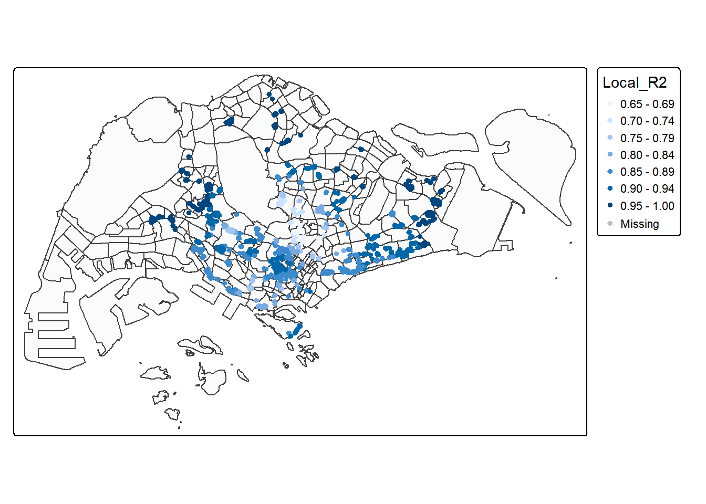
tmap_mode("plot")9.8 Visualsing R2 in East Region
The code chunk below creates an interactive choropleth map for the distribution of local R2 values in the East Region. The East Region includes planning areas like Bedok, Paya Lebar, Tampines, and Pasir Ris. Note there are no condos in Changi. The local R2 means the model explains, for example, 90% of the variance in condo selling prices when the R2 value is 0.9.
tmap_mode("plot")
tm_shape(mpsz[mpsz$REGION_N=="EAST REGION", ])+
tm_polygons()+
tm_shape(condo_resale.sf.adaptive) +
tm_bubbles(col = "Local_R2",palette= "-RdBu",
size = 0.4,
border.col = "gray60",
border.lwd = 1) +
tm_view(set.zoom.limits = c(11,14))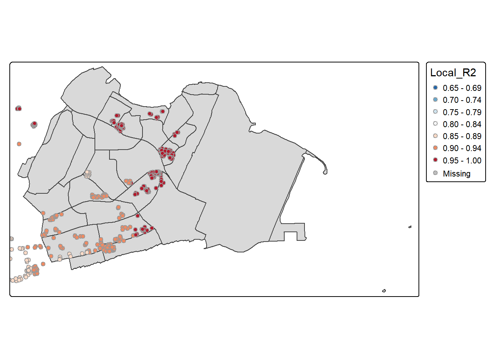
The local R2 values in the East Region vary from 80% to over 95%. The west side of the East Region demonstrates lower R² values around 90%, compared to about 95% on the east side. Bedok has a mix of 80% and 90%.
Overall, the adaptive geographically weighted model (AIC bandwidth method) performs quite well.
9.9 Visualising Coefficient Estimates
The code chunks below is used to create an interactive point symbol map for AREA_SQM.
tmap_mode("plot")
AREA_SQM_SE <- tm_shape(mpsz_svy21)+
tm_polygons(alpha = 0.1) +
tm_shape(condo_resale.sf.adaptive) +
tm_dots(col = "AREA_SQM_SE", #standard error of local coefficient, reliability of local estimate
border.col = "gray60",
border.lwd = 1) +
tm_view(set.zoom.limits = c(11,14))
AREA_SQM_TV <- tm_shape(mpsz_svy21)+
tm_polygons(alpha = 0.1) +
tm_shape(condo_resale.sf.adaptive) +
tm_dots(col = "AREA_SQM_TV", # local t-value, statistical significance of local effect
border.col = "gray60",
border.lwd = 1) +
tm_view(set.zoom.limits = c(11,14))
tmap_arrange(AREA_SQM_SE, AREA_SQM_TV,
asp=1, ncol=2,
sync = TRUE)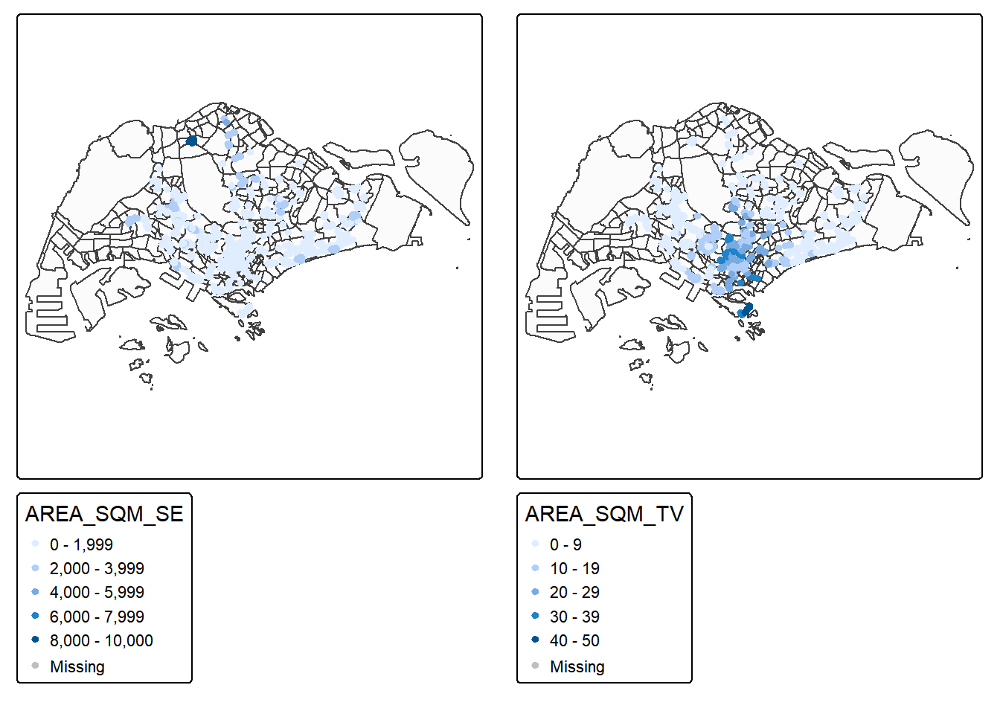
tmap_mode("plot")The spatial distribution of AREA_SQM coefficients indicates that floor area is a reliable and significant predictor of condominium prices in the central and south-eastern regions, where standard errors are lower and t-values are moderate to high. In contrast, the northern and western regions exhibit higher standard errors and lower t-values. The floor area has a less stable and weaker influence on price variation in these areas.
The code chunks below is used to create an interactive point symbol map for MRT.
PROX_MRT_SE <- tm_shape(mpsz_svy21)+
tm_polygons(alpha = 0.1) +
tm_shape(condo_resale.sf.adaptive) +
tm_dots(col = "PROX_MRT_SE", #standard error of local coefficient, reliability of local estimate
border.col = "gray60",
border.lwd = 1) +
tm_view(set.zoom.limits = c(11,14))
PROX_MRT_TV <- tm_shape(mpsz_svy21)+
tm_polygons(alpha = 0.1) +
tm_shape(condo_resale.sf.adaptive) +
tm_dots(col = "PROX_MRT_TV", # local t-value, statistical significance of local effect
border.col = "gray60",
border.lwd = 1) +
tm_view(set.zoom.limits = c(11,14))
tmap_arrange(PROX_MRT_SE, PROX_MRT_TV,
asp=1, ncol=2,
sync = TRUE)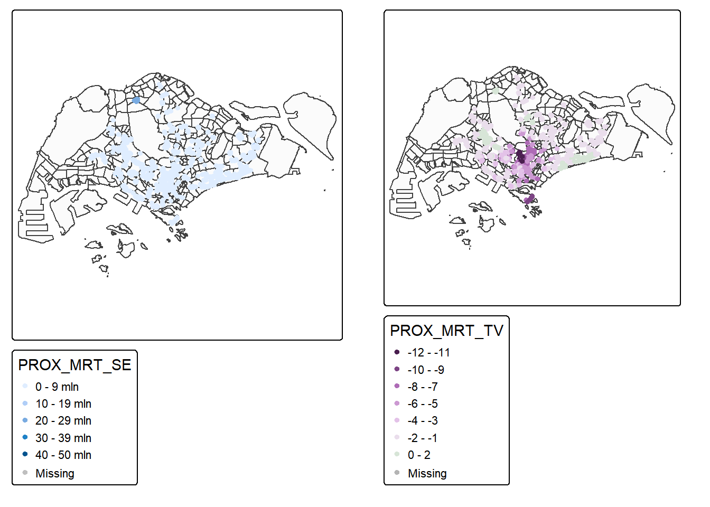
The PROX_MRT variable exhibits low standard errors overall, that means stable coefficient estimates across the study area. It shows a strong and statistically significant negative relationship with condominium resale prices in the central and southern subzones. That properties closer to MRT stations tend to have higher prices.
However, a few light-coloured subzones, such as Bukit Batok, Bukit Panjang, Bukit Timah, and several areas along the East Coast exhibit non-significant relationships.
|t| < 1.96 means statistically insignificant.
10 Reference
Gollini I, Lu B, Charlton M, Brunsdon C, Harris P (2015) “GWmodel: an R Package for exploring Spatial Heterogeneity using Geographically Weighted Models”. Journal of Statistical Software, 63(17):1-50, http://www.jstatsoft.org/v63/i17/
Lu B, Harris P, Charlton M, Brunsdon C (2014) “The GWmodel R Package: further topics for exploring Spatial Heterogeneity using GeographicallyWeighted Models”. Geo-spatial Information Science 17(2): 85-101, http://www.tandfonline.com/doi/abs/10.1080/1009502.2014.917453
Kam, T. S. 13 Calibrating Hedonic Pricing Model for Private Highrise Property with GWR Method. R for Geospatial Data Science and Analytics. https://r4gdsa.netlify.app/chap13